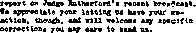

Uirtld nfnt It K17 ir fta aCMaat ni te Mlm tbit M thl* JuWv
vrllii willy fir inif, Vi tbit In dMi St’, Ml d» Mt hl* fl»»-
rlky.


1938
Consolation
Magazine
Contents
Jesuitized Germany (Part 1)
The Demon Baek o£ Hitler
To Stuff the American People
Cardinal Innitzer Endorses Hitler
War the Principal Thing-
The Massed Glint
The New Government
Swedish Sinuosities
Bethel Publisher Aboard Ship (IV)
Model Bible Study of the Air
Diekstein's Silly Measure
Counsel by J. F. Rutherford
“Revival of the Spirit of Religion" Free Counsel for AAB News Review
Judge Rutherford's Letter to the NBC
Acorn Agency’s Caustic Letter
Attorney Moyle Takei a Hand
The Mourners’ Bench Adventure of Two Little New Jersey Rabbits Under the Totalitarian Flag
The Innocent Harlot
Selling Out the United States
British Comment
Judge Rutherford’s Speech
World Convention
Freethinkers’ Congress The Deer—Cover Design
3
4
7
9
10
11
12
12
12
14
15
17
20
21
22
24
24
27
28
28
28
29
31
Published every other Wednesday by
THE GOLDEN ASK PUBLIgHINQ COMPANY, INC.
117 Adame St,, Brooklyn, N, Y,, U, B. A.
President ■ Clayton J, Woodworth Vipe-President Nathan H. Knorr
•eoretery and Treasurer Charles K. Wagner
Five Cents a Copy
|t a year In the United States
11.31 to Canada and all other oo tin tries
NOTICE TO SUggCHIBKRg
Remittance ■ For your own safety, remit by postal or expreee money order. When coin or currency Ie lost in the ordinary maha, there le no redress. Remittances from countries other than those named below may be made to the Brooklyn office, but only by international postal money order.
Receipt of & new or renewal subscription will be acknowledged only when requested. Notice of Expiration is sent with the journal one month before subscription expires. Please renew promptly to avoid loss 01 copies. Band ohsnpe of address direct to us rather than to the post office. Tour request should reach us at least two weeks before the date of issue with which it is to take effect,' send your old as well as the now address. Copies will not be forwarded by the post office to your new address uiitese extra postage Is provided by you.
Published also In Bohemian, Danish, Dutch, Finn I eh, French, German, Greek, Japanese, Norwegian, Polish, Portuguese. Spanish. Swedish Hungarian Ukrainian
OFFICES FOR OTHER COUNTRIES
England 84 Craven Terrace, London, W. 2
Canada 40 Irwin Aventie, Tofontb 5, Ontario Australia 7 Beresford Road, Strathfield, N.S.W.
South Africa , 623 Boston HoU»s, Cape Town
Entered aS seeorid-elass matter at Brooklyn. N. Y., under the Act of March 3, 1879.
Your Age and Your Money
Multiply your age by 2; add 5; multiply by 50; add your spare change if less, than a dollar; subtract 365; add 115. The two lefthand figures are your age, and the two right-< hand figures are your spare change.
►
Such a Business
To help business, a sign was erected in front of a church at Washington, “The President’s Church." Underneath, some wag, uninformed or irreverent, or both, wrote, “Formerly God’s,” Such a business.
Th* Former s’ Grammar
One farmer asked another which is correct, that a hen is sitting or setting. Back came the evasive answer, “I don’t know, and I don’t care. All I worry about is, when she cackles, is she laying or lying?”
Ran Acroat It >
Affable waiter — How did you find that steak, sir?
Guest—Oh, quite accidentally. I moved that piece of potato and there it was, underneath. —Labor.
Ona Bern Every Minute '
A patient in an insane asylum sat fishing over a flower bed. A kind-hearted visitor asked, “How many have you caught today?” and got the interesting answer, “You’re the ninth."
Two Point! for the Devil
Come to think of it, there is one more point that can be made for Satan, Besides being persistent think how very polite he was. He said, "Ladies first," . ' .
t
Might Have Mi»»ed Something .
Boss, to late office boy: “You should have been here half an hour ago!”
Boy, interested: “Why? What happened?"
The Big Roar
What lions roared so that the whole world heard them?
The lions that were with Noah in the ark.
Truth ’
Without, or with, offense to friends or foes I sketch your world exactly as it goes.
“And in His name shall the nations hope.”—Matthew 12:21, A. R.V.
■: ..... —-------- ----------------.... .......
Volume XX Brooklyn, N. Y.f Wednesday, November 30, 1938 Number 501
Jesuitized Germany t/n two Parts—part d
(Hitler and the German cardinal, Ftvulliabef, are in constant consultation with each other at Munich.)
IT COMES as no surprise to have the Nazi movement compared to the Jesuit system and to have a. striking correspondency brought to notice. The London Catholic Herald says:
Jesuits “Just Like Nazis”
Yet another book lias been written on the Jesuits. In The Jesuits, the author, F. A. Ridley, holds that “hundreds of pages of llitlcT’s Mein K-ampf might have been taken straight from the text books of the Jesuit psychologists.”
An astonishing parallel is developed between the Jesuits and the Nazis. Both the b'uhrer and the first General started their respective “movements” with six companions, hoth movements exact blind obedience from their members, “and have practised to an extraordinary degree all the methods and devices of propaganda to control mass psychology,” etc., etc.
Another sinister fact is brought to light: the Jesuit system is originally derived from Islam. EVen the motto of the Society and St. Ignatius’s writings are almost the ipsisA-ma vtirba of the spokesmen of Islamic Sects. We recommend the hook for comment from “a spokesman of the Jesuit sect.”
The parallel in a deadly parallel; for hb Jesuitism embodies all of the worst features of Catholicism, so Nazism appears to emphasize the worst side of the German temperament, without the counter-balancing good qualities generally found in the German people.
Nor is the correspondency between Jesuitism and Nazism without an assignable cause, as is evident from, the following from the Daily Telegraph of Sydney, Australia, under date of April 1, 1938:
Ji. strange and sinister phenomenon, Dr. Joseph Goebbels, Nazi Minister for Propaganda and Public Enlightenment.
It is the task of Hitler, the emotional, to conquer the Germanic soul; it is the task of Goebbels, 40-year-old peasant-born intel-. lectual, to subjugate the Germanic mind by a drumfire propaganda which assaults eye and ear unceasingly, wearing down resistance and crumbling and destroying reason.
Trained in a Jesuit school, seven universities, he failed h.S a creative writer, turned to journalism, and, at 25, found and joined Hitler.
He founded Nazi branches in the Ruhr and Rhineland, and within four years was made Berlin leader and national propaganda chief.
lie learnt from Rome the use of spectacle, music, color. Moscow supplied the inventions of propaganda cell, wall newspaper, radio. He added his own devices.
The origin of the official Nazi anthem is of a piece with the origin of Nazism itself, as the following item reveals.
Horii Wessel a Pimp
The American Guardian declares that Horst Wessel was a pimp, living off the earnings of prostitutes. He was killed in a barroom brawl, and because he was one of the first of the Nazis a song was composed in his honor; and that song is today the official Nazi anthem. Such is Nazism in till its glory.
To take good care of one’s self is apparently one of the first principles of the good Nazi, as it is in the life of a member of the Roman Hierarchy. NiTl unmindful of the possibility that the decent element in Germany may rise Up and throw off the hated Nazi yoke, Nazi leaders have tried to prepare for the evil day.
Waiting to be kicked out of Germany, Goebbels has a bank account in Lloyd’s, London, in the name of his wife. ITcsb, Hitler’s secretary, has an account in Riga in the name of Major Elster. Goering has one in London under his W'ife’s maiden name and another in Stockholm under his first wife’s maiden name. Streicher, Bruckner and Von Papon have money deposited abroad. All the principal Nazis are anxious, and may well be. But when Jehovah strikes, where is the bank account that will do anybody at all any good?
The better element in Germany is not In favor. Their sentiments ate conveyed in expressions such as that made recently by Dr.
Ernest Wilhelm Meyer, sixteen years a member of the German diplomatic service, when ho resigned as first secretary of the German embassy at Washington. He said:
Hitler and his regime have betrayed what I knew to be the lasting interests of the German father* land* I could no longer conscientiously serve a government which I saw to be the foe of so many things I had been taught Germany stands for. The moral law and loyalty to the true German make surrender to national socialism impossible. I cannot do otherwise, whether as a German or as a Christian.
In passing, mention is made of the fact that the pope confesses his sins to a ,J esuit priest, and while there appears to be no direct connection between pope and fuehrer, and there have even been some seeming slight divergencies between the two, the character of the Jesuit organization is such as to assure fairly good collaboration, at least for the present.
It w'ould be in harmony with Jesuit tactics to put machinery in motion with a view to
Getting Rid of the Honest
In order to get rid of such of his diplomats as are honest and truthful Herr Hitler ordered 44 of them to return to Germany. As soon as they complied they were thrown into jail, and one of them, Blissmer, who had been in Moscow, was shot and his widow was forbidden to open his coffin—indicating previous torture.
The following statement has all the earmarks of Jesuitism and the dark ages which produced it, and which it in turn prolonged. The speaker, Gerhardt II. Seger, a German ace, was himself in one of Germany’s unspeakable concentration camps:
Hitler purposely picks out sadists as heads of the eon cent ration camps. Hundreds of people are flogged and beaten to death. 1 remember one incident—one chap in the same concent ration camp with me who died in my arms—naked—his body so badly beaten that it was nothing but swellings and black and blue from the head to the feet—he died in my arms.
People do not dare do anything, say anything, look askance at anything whisper so much as a word even to relatives visiting from the United States or other countries, for fear some word dropped will send them to jail. Each day brings the continued dread and fear that the door bell may ring—not for the milkman or the mailman as in this country, but for a storm trooper taking the citizen to some unknown concentration camp on a charge that is not known, for unknown violations of some alleged law, to be kept there for
4
an unknown length of time. All mail in Germany is subject to be opened by any official of any local government.
Hitler’s promises are worthless. He said, in August, 1933:
As long as I am chancellor of the Reich there ■will be no war, save possibly' in the event of an invasion of our territory from without.
In May, 1935: '
There are no territorial questions about which we will go to war.
On March 11, 1936:
My proposal for the conclusion of non-aggression pacts on the east and west of Germany was meant as a universal one. There is certainly no exception intended. It applies equally to Czechoslovakia and Austria.
Since these three lies were told both Czechoslovakia arid Austria were swallowed alive, and the en<i is not yet.
*
The Demon Back of Hitler
The following paragraphs from Cavalcade, an English news weekly, set forth sufficiently well the fact that Hitler is demonized and that the whole German people are under hypnotic, i.c., demoniac, influence:
In the war Lance-Corporal Adolf Hitler, of the Kith Bavarian Reserve Infantry Regiment, spent four undistinguished years doing the most menial of military jobs as an orderly or “runner”. A whiff of gas put him in hospital just before the Armistice. Running true ty form as a possible worldleader, he had a “vision” while hospitalized, in which he haw himself as the saviour of Germany'. Ills comrades nicknamed him “eln Spinner” (crazy one). He later blossomed forth a.s a soap-box orator, preaching Socialism and anti-Semitism. His tub-thumping eloquence had fire. Only those who understand German, and have heard him, can realize the secret of Eft Ger’s appeal to the masses, Ue talks plebeian nonsense with the hysterical eloquence of a religious fanatic.
The hierarchy' around him have capitalized his gift of speech. Before he talks—as at Nuremberg — the mighty' crowd is worked up to a pitch of expectancy that becomes almost unbearable. Music, the radio, theatrical lighting effects, perfect timing, are so skillfully handled that the audience is in a state of intense nervous excitement before the leader makes his dramatic entrance. Then he faces the microphones—in the use of which he is now an expert —and, starting slowly, his words become gradually more rapid, swelling into a torrent of impassioned speech, delivered by a gesticulating figure with a trance-like expression. IL is a terrifying spectacle —hundreds of thousands of people literally mesmerised by a screaming demagogue.
Hitler is the psycho-analyst’s perfect specimen.
consolation
He believes himself to be divinely inspired; be has a feminine streak of emotionalism; he is a poseur; has visions of grandeur; alternates between periods of elation, frenzied activity, lethargy and hysterical weeping; denies himself the pleasures and pastimes of normal men; at 49 is a confirmed misogynist [woman-hater].
‘* It ’s gonna be a small world”
G. Ward Price, European correspondent of the British Daily Mail, personal friend and confidant of Adolf Hitler, narrates that Hitler hears voices; which voices* readers of this magazine know are the voices of fallen spirits, demons, devils, if you please. No doubt the principal voice which he hears is that of Gog, the Devil’s own prime minister in the present distressing condition of human affairs. Hitler told Price that .on one occasion during the World War a voice said to him audibly, “Get out of here”; and that he obeyed and in a moment a shell killed the fifteen other men who had been with him but who did not hear the warning voice of the unseen spokesman.
Hopeless Hysterical Piffle
Every German is now supposed to hold Hitler’s autobiography Mein Kampf in higher esteem than the Holy Scriptures, written under inspiration of the holy spirit of God, but Professor Andrew Browning, of Glasgow, who made a study of the Hitler production, declares that it is the most hopeless piffle, a lot of idiotic ejaculations, and a hysterical appeal, to sentiment with no sense in it at all.
Ye.t the correspondency between Mein Kampf and Jesuit principles, already alluded to, argues that this “piffle” has a content of dangerous elements not easily dismissed by a wave of the hand. ’
Doubtless Hitler and his reign are highly esteemed by a certain clement in Germany and elsewhere, and this esteem is sometimes ludicrously shown in instances such as the following, where a truckling attitude is made foolish by a lack of common sense:
New Glories for Adolf
It occasionally happens in the case of an old couple that live together for upward of haff a century that when one dies the shock kills the other. This occurred in a village in Saxony, Germany, recently, and the pastor who conducted the funeral had no more sense than to say that this was a divine favor bestowed upon the old couple due to the Fuehrer, Adolf Hitler : that since he came to power, God’s grace was thus visibly with the German people.
So large a part does the radio play in the Nazi scheme of things
that Nazidom might almost be referred to as a
Dictatorship by Wireless
Of all German households fifty-five percent now own the cheap so-called “people’s sets” for receiving wireless. These sets, sold for 59 marks or shillings (about $15) are such an important part of the Nazi system of compelling all G ermans'.to think alike that the aim is to put one in every home not Jewish. The tax collectors are forbidden to take them. The purpose is that when Hitler speaks the whole of Germany shall listen in, and woe betide him who does not.
To make sure that everyone listens when the demon-in spired Fuehrer speaks, hotels and restaurants are ordered not to permit patrons to pay their bills during one of these addresses. Listening-in is not by any means left to the option of the individual.
The real state of things is well set forth in an article by Otto D. Tolisehus appearing in the New York Times recently. He says:
The National Socialist party has been united with the State by law. It is not, however, part of the State; rather the State is payt of the party. The party is greater, and therefore above the State; it '‘commands*’ the State, supervises its work and spurs it onward. Thus the one-party State is reduced to an instrument of the party through which it works the people’s will.
This will incarnates itself in the person of Adolf Hitler, Fuehrer and Reich Chancellor. Deriving his just powers, first from the consent of the governed, as demonstrated in: periodic plebiscites, and second, from his manifest destiny to be the instrument of Providence, he is leader of the whole German people and, as such, head of both party and State, He is, in the words of Dr, Wilhelm Stuck-ard, constitutional expert of the government, “the supreme political leader of the people, supreme leader and highest superior of the Administration, supreme judge of the people, supreme commander of the armed forces, and the source of all law.”
In other words, he combines in his person all executive, legislative and judicial powers; and, hedged by the divinity of such absolute power, like the Tenno of Japan he is not and cannot be an “organ” of the State, but is above the State; he knows no equals, only subordinates; he is master over the life of every German, and he is responsible to nobody but himself.
The manner in which Hitler elections are conducted explains why there appears so little opposition to the rule of Hitler, or rather so little opportunity to express dissent.
In the Hitler elections voters are handed cards. As the cards are collected they are put in piles of 100, with a list of voters’ names and numbers for each pile. By counting the cards in order the persons who dare vote “No” are at once identified, and after that they are persecuted to the end.
Charges of Persecution Nonsense
The Associated Press carried a dispatch from Berlin in which a spokesman of the Nazi government denounced as nonsense Ahe oft-repeated charges that the Catholic Church is being persecuted in Germany. Referring to a letter of the bishops making these charges he is quoted as saying:
All one has to do is to compare what the German state has done for the Catholic Church. The government is paying millions of marks annually to the Church and the fact that the reading of’ the letter was possible clearly demonstrates that there can be no talk of persecution. The government itself has the most earnest desire to protect the Church from anti-religious demonstrations,
Das Schwarzs Korps, mouthpiece of Hitler’s Schutzstaffcl bodyguard, has called Upon priestly complainers to “name a country in which within so few years so many churches and cloisters were built, particularly with State allowance, as in Germany since 1933”.
When Hitler came to Nuremberg all church bells,' Catholic and Protestant, rang for an hour. The London Catholic Herald says “they had to”. Well, the three Hebrews, Shadrach, Meshach and Abed-nego, “had” to fall down before Nebuchadnezzar, but they didn’t. The very language of the Herald tells the story’, and shows the Roman Hierarchy without manhood and without courage. Their time of stress will come, however; and the sanfb paper elsewhere says that a plebiscite is contemplated in which the people will be asked to say, “Do you wish to remain loyal to the Fuehrer or the Pope The Herald says that if such a plebiscite is taken, “only appalling results could ensue and irreparable damage would be done.” • Here is hoping the plebiscite is taken, and the sooner the better. The Hitler crowd know that the Hierarchy are hypocrites, and wish to show them up. It is a family quarrel among racketeers and ought to be interesting and illuminative.
Working Up Sob Stories
At Salzburg, Germany, is a monastery building that is German state property. The-State decided to make use of the property and ordered the mqnks to vacate. The State offered the services of professional movers, but the monks said they would do the moving themselves. When the due time arrived the monks, in order to attract public sympathy, threw their furniture from the third-story windows into the courtyard, where it was smashed. ’
All so-called 'priests’ and 'ministers’ in Germany are compelled to take the oath of loyalty and obedience to Hitler, and thus to put on their garments of Baal (2 Kings 10:18-25), or resign, or go to prison.
Further, Administration of Protestant church property in Germany is now wholly in the hands of State functionaries who are at liberty to sell it or otherwise dispose of it as they see fit. But the holdings of the Roman Catholic Church have not been and will not be confiscated, though they are extensive and many of these holdings are not used for religious purposes.
Moreover, Herr Buerckel, Hitler’s commissar fbr Austria, in .answer to a newspaperman’s inquiry, stated emphatically that there
CONSOLATION would be no confiscation of the property of the Roman Catholic Church. Of course not!
But the Hierarchy is not satisfied. It wants more, including the privilege of continuing its monastic brothels. The Catholic Herald, London, expresses its hope for complete noninterference in the religious business of the Hierarchy, in these words;
If the spell of the splendour of the Habsburg past steals more and more over Hitler, born Austrian as he is, the whole orientation of Nazi policy will be changed and religious peace for the Catholic Church in Greater Germany (and this seems the only hope) will come as a consequence of a realisation on Herr Hitler’s part of the dynamic contribution Catholicism still has to make to the new Greater Germany as it had to the great Holy Roman Empire which drove back the Turks.
ft is the only hope: it is the position on the issue as von Papen saw it and as Seyss-lnquart sees it, even possibly as Cardinal Innitzer sees it.
Given the fact thwl Catholics themselves in Germany, Italy and France are largely to blame, it is useless to take up a purely negative and critical attitude towards Hitler, Mussolini, Franco. The present position must be accepted, religious peace must be found, and then Catholics can begin again to make their contribution to the building up of the new Germany, the new Italy and the new Spain.
To Stuff the American People
To stuff the American people with the nonsensical idea that there is any real friction between Hitler and the pope, newspapers in this land were expected to believe that 10,000 uniformed Storm Troopers, on July 30, went to Ruttenburg, total population 9,000, invaded Bishop Sproll’s home, broke his street windows, set fire to his bedroom and threw his prayer book into the street, but quickly left when 80 policemen from Stuttgart arrived and restored order. Now just imagine readers of the New York Times expected to believe such perfectly pure piffle. In the first place, 10,000 people could hardly get into the little town of Ruttenburg; and even if they did they could not all make an attack on one house; and even if they made an attack they could not be chased away by 80 police. How silly I The Tinges should quit publishing such patent and foolish Roman Catholic propaganda. ;
Somewhat similar stories concerning Cardinal Innitzer in Austria have recently been played up in American papers. It is almost certain these stories are circulated, under the supervision of the Hierarchy’s Jesuit agents, to offset in some measure the telling effect of Judge Rutherford’s expose of the Hierarchy’s co-operation with Nazi as well as Fascist totalitarianism.
The stories of the Nazi attack -on Innitzer, while he was saying his “Now I lay me”, were nicely dressed up. The Nazis are reported to have thrown prayer hooks out of the window, after breaking said windows, and to have even burned crucifixes (probably provided for that purpose in advance). But it all sounds phoney, what with 90 percent of the Austrian people being reputedly Catholics. In any event, Hitler was said to have been much annoyed by the rioting, during which the rioters are said to have shouted, “Away with the priests! To Dachau [concentration camp] with Innitzer!” Hitler appears not to share these sentiments; not yet!
New York Times, front page, October 9, 1938, scare headlines two columns wide (with a story 24 columns long following them), were as follows:
Vienna Nazi mob storms Cardinal Innitzer’s home; he is reported injured; windows smashed; prelate is said to have been cut by glass as he prays in chapel.
New York World - Telegram, October 10, 1938:
It was established today that Cardinal Innitzer, far from being injured, was not even in the palace during Saturday’s storming. At 7: 3(1 p.m., well before the attack started, he left to visit the monastery in the suburb of Waehring, where he remained until the rioting was over, and was believed to have been unaware of the attack tliroughout.
What joy it must have been to some tool of the Hierarchy to prepare that 24 columns of slop for the New York Times, so that Cardinal Innitzer could play the part of a martyr and the suckers that read the Times could continue to believe that the Hierarchy is an object of persecution in Germany!
New York Times, October 10, 1938, Associated Press Dispatch:
The Cardinal suffered a forehead wound from a piece of flying glass last night as he knelt in his private chapel. . . . Parishioners wondered how the Cardinal had escaped with only a forehead wound, suffered when a window of his chapel was smashed by a stone.
Caught with the Goods
New York Times, October 11, 1938 (a day after the whole world knew that Itpiitzer was not in the palace and therefore not hurt):
The agency Dienst aus Deutschland said in an inspired article from Berlin that Herr Bnerckel had taken vigorous steps against demonstrations, including that of Saturday night, when the Cardinal was cut by flying glass in the stoning of his palace in St. Stephen’s S Ju are.
New York Journal-American, October 10, contained an International News Service dispatch that “the prelate had been unconfirm-edly reported slightly hurt”; which is merely another way of telling the truth that he was not hurt at all.
An Associated Press dispatch front Vienna, dated October 13, published in the Washington Star of the same date, again made reference to the untruth the Hierarchy is so anxious to put across, when it said:
Windows were broken, the interior damaged and the cardinal wounded by a thrown rock.
An Associated Press dispatch from Vienna dated October 13, published in the New York Timex of October 14, peddled the old Jie once more in this sentence:
Windows of the arehiepise.opal palace were shattered with stones and the Cardinal, at prayer in Eis private chapel, suffered a forehead wound.
This prayer-gag is being worked to a finish. The United Press, in a Vienna dispatch dated October 13, published in the New York Daily News for October 14, told of the later crowd of Nazis, indignant at Innitzer’s political methods, who dragged a galtbws to the door and wanted him hung. How he could be hung on what The Associated Press said was a “"sign swinging from a miniature gibbet”, published the same day in the New York Times, was not stated. The Daily News had it in a SQarehead two columns wide and three lines deep that “250,000 Nazis lug gallows to Cardinal’s door” and- that the cardinal “knelt in prayer in one of the smaller chapels of the palace as the mob surged outside demanding that he be hanged or arrested”. The Daily News is always eager to grovel before the Hierarchy; as eager as the Times.
Stupid Lies Repeated ad Nauseam
The Osservalore Romano of October 14 had the Vatican’s lull two-column story of the riot. It did not have the gall to repeat the lie that Cardinal Innitzer was in the palace and was hurt in the forehead at the time of the riot, but still sought the glory of the impression of martyrdom by the evasive statement:
If it was possible to protect the Cardinal from the fury of the rioters, who uttered the most violent and threatening insults against him, violence of the gravest type was being perpetrated in the near-by chapter house of the cathedral. ,
President Roosevelt and the man in the moon were protected from the rioters for the same reason as Cardinal Innitzer. None of them was there at the time. But you would not expect a clerical organ to tell the simple truth on any subject at all. Now, would you?
The “Irresponsibles” who broke some windows of Cardinal Innitzer’s palace in Vienna, and are alleged to have hurt Innitzer himself while that gentleman (according to the newspapermen) “was reciting prayers in his private chapel” did not do anything that ^offended anybody seriously. Arrested at the time the windows were broken, they were dismissed the next day. All together, it made a nice little skit to keep up the public delusion that the Hierarchy is being persecuted. As a matter of fact, Innitzer was and is one of. Hitler’s strongest admirers. Police are protecting him from further annoyance.
The tale still continued to be told as late as October 19, carefully phrased, as in the Times-Picayune of Romanized New Orleans, which referred to “the stoning of the archie pi sc op al palace ... in which Cardinal Innitzer was slightly injured”.
Nor is it here intended to convey the idea-that these stories are manufactured out of whole cloth. Jesuits do not lie as crudely as that. Doubtless there is considerable opposition to the Hierarchy and much suppressed and partly expressed ill feeling on the part of the garden variety of Nazi, who do not see through the Nazi-Jesuit scheme of things.
Such get out of hand every now and then, as in the instance of a pack of paint-smearers who forgot to stick to the assigned job of smearing up the business places of Jews, went to a village near Berlin and began smearing up the business place of a Catholic priest, smearing upon the walls of the Catholic church a picture of a gallows with a priest hanging upon it. The Jesuits, the Hierarchy and the pope will yet be sorry for backing the Nazis.
It is fun to hear the gangsters talk about one another. Dr. Alfred Rosenberg, Hitler’s ideologist, in an address in the Reich Culture Chamber, referring to “frightful mess” of immorality among the clergy of Ostmark (Austria), said;
We have no reason for giving the world this picture of the moral decadence of the clergy, and would rather regulate this matter among ourselves. Reasonable men, like Cardinal I nnitzer-—a) though I would not even trust him out of sight—will, under pressure of established eircumstances, find themselves compelled to submit, more and more, to National-Socialist leadership.
The Religious News Service, in a dispatch dated London, September 17, quotes at length from an address by Alfred Rosenberg, given in Berlin, in the Reich Cultural Chamber, in which that gentleman stated that it is his own and Hitler’s conviction that the Catholic and Protestant Confessional churches in their present forms must disappear from the life of Germany. Rosenberg stated that the clergy that cannot be won over will have their financial arteries cut. Without a doubt, religion is in for a bad time in Germany.
To curry favor with the Nazis, particularly in Austria, some 2,000 Catholic priests there are now, according to reports, demanding some changes in the setup of the priest business. They v/ant to conduct their masses in German instead of Latin. They want, instead of an ordinary cardinal, a cardinal primate for all Germany who shall have the same" standing with the pope as the primates of Poland and Hungary. These priests also wear the swastika publicly, pray for Hitler and ■preach favorably about him. They hope to increase their ranks to 5,000 soon.
“Christian Swastika”
A sculptured swastika found in a Rumanian monastery is being widely publicized all over , Europe as illustrating the essential harmony between Hitler and the pope. In the center is supposed to be Jesus on the “cross”, above Him a long-haired old man supposed to be God, and above that the form of a dove representing the holy spirit; At the top right are the Holy Scriptures, and at the left a wmrrior or something, while at the bottom right there are priests, and the bottom left, what do you think ?—“souls in /purgatory’.”
It 4s somewhat W a joke that Belgian archaeologists, investigating a Jewish synagogue in the ruined .city of Apamea, Asia Minor, found a number of swastika designs in the floor (but they didn’t have any of the abovementioned special features!). All of which goes to show . . . ■
The w'ay in which the Jews are being doublecrossed will be shown later.
Hitler was once a choirboy in the Roman Catholic abbey of Lembach, in Austria, and he took the design for his swastika from the cd at-of-arms of the abbot of Lembach; so says the “Reverend Father” Canisius Bluemel, O.S.R., of St. Joseph’s Abbey, Covington, Louisiana. Bluemel and Hitler were schoolmates.
Cardinal Innitzer Endorses Hitler
When Adolf Hitler made his triumphal entry into Austria, in March, 1938, after his absorption of Austria, Cardinal Innitzer, the chief standard-bearer of hypocrisy in Austria, was among the first to visit him and pay him honor. ’
Not only did Cardinal Innitzer “Heil Hitler” in his own handwriting, and ivrite Cardinal Bertram of Breslau that the Austrian Hierarchy would continue to co-operate with Hitler, but he caused the swastika flag to be raised on the Vienna cathedral.
March 27 Innitzer’s declaration in favor of the union of Austria with Germany was read in alLAustrian churches and instructed all Catholics in Austria to vote “Ja” in favor of the “Anschluss”, that is, the Nazification of Austria. Shortly afterward the Vatican radio station and newspaper denied that Innitzer had Papal authority for his declaration in favor of the Hitler gang. And within twenty-four hours the pope repudiated the Vatican broadcast. Ho-hum!
Von Papen, who betrayed Austria into the hands of the Nazis and then conveniently disappeared, is one of the pope’s chamberlains. But, of course, he did n/t have the pope’s approval either. Nobody in the Hierarchy deigns to pay the least attention to the pope, apparently; especially not when anything really important happens. Woqder how long the Jesuits think they can get away with that kind of 'stuff. You have probably heard the story of the boy who cried “Wolf!” a little too often.
In the overthrow of the Austrian government the Hierarchy also made use of the police (Austria is 90-percent nominally Catholic). On the night of March 11, 1938, when the four years’ conspiracy came to a head, the police in the streets of Vienna suddenly donned the swastika armlet and attacked loyal Austrian citizens and Austria was gone. Well, if nine-tenths of the Austrians are Catholic— and nobody denies that—they had a right, if they wanted to, to join Hitler, perhaps; but why did they want to? Because there is a fundamental agreement between pope and fuehrer, between Nazism and Catholicism; they have a common father. (John 8:44) But the parenthood does not make for permanent family har-
mony, and signs of discord and disaffection are in evidence.
Meanwhile Dr. Schuschnigg, former Austrian chancellor, is in the hands of Nazi tormentors, A well-authenticated report has it that when the Nazis seized Austria they confined Dr. Schuschnigg in a room where they assaulted him by radio, pouring out a constant stream of personal abuse and invective in the foulest terms. Twice von Schuschnigg smashed the receiving sets, until finally one was fixed in the ceiling out of his reach. Such is Nazism. In Vienna the Nazis unveiled a tablet to the memory of the 13 murderers who assassinated Dollfuss.
Some Material Good and III
It is necessary that a totalitarian state should have something to substantiate its claim to distinction and to obscure as far as possible the fact that spiritual and moral decline accompanies its operation.
At noon, June 15, 1938, at sixteen different points in Berlin, road drills and concrete mixers began the work of reconstructing the city. Some of the plans envisage more than 600 years to bring them to completion.
Hitler’s new chancellery has one hall 500 feet long and 400 office rooms for the different departments of his government. The flunkies will be dressed in liveries costing $175 each, one feature So f which will be white silk stockings specially made for them in London. Their tail coats will be ornamented in front with silver frogging. In this display Nazism again shows its essential similarity to Roman Catholicism, which likewise stresses display at the cost of truth, goodness, righteousness.
The wolstra mill at Leipzig, covering twenty acres, is believed to be one of the greatest triumphs of technical skill achieved by man. Streams with artificial currents are used to push the timber about, and it is seldom touched by human hands. In actual practice the Germans use a mixture of 70 percent of this artificial wool with 30 percent of natural wool, and the finished product cannot be distinguished from the genuine woolen article, though it is actually much inferior. So Germans today wear wooden shirts, shortened two inches by government decree; their shoes are made of paper; their soap, from coal products ; and their pipes of rosin. German bakers are forbidden to sell bread until 24 hours after it is baked. This cuts down consumption, and is said to be more healthful. Sheets and blankets are made of cellulose; shoe polish, of coffee grounds; flour, of corn meal and potatoes; bricks, out of garbage residue; plumbing, from a celluloid - like substance; edible fats, from coal; wallets and slippers, of fish skins. Electric light bulbs are salvaged and made over.
Denis Weaver, back from Berlin, tells, in the London News Chronicle, of the experiences of a friend with a pair of new German shoes. The shoes were expensive, and nice to look at, but the first time they were used in the rain their owner got his feet wet. The soles had been made of compressed rubbish. Also, Weaver found the bread doughy and of dubious content, the butter whitish and of sickly taste, and markets where, on certain days, one could not get fruit or even onions.
Buna, the new substitute for rubber, is said not to be so good. It is costly, dangerous and inflammable, and will explode in a wreck.
Since the advent of the Nazi regime the German people have been eating horse and dog meat in ever-increasing quantities. Over 100,000 horses and 3,000 dogs are eaten annually, but not by Hitler, Goering, Goebbels, Faulhaber, et al,
German employers are told by the government what price they may pay for raw material, what price they may charge for the finished product, how much they may produce,, where they may sell their product; what dividends they may receive from the business, what wages shall be paid to the workers, and the conditions under which the men may work.
Tn August the Reich Bureau for Employment announced that it had 310,000 vacant posts, despite the fact that 120,000 farm hands had been brought into the country from abroad. Looks as if the best device the Devil has to keep a nation busy were to get them on their toes to murder their fellow men in war.
War the Principal Thing
War is the big thing in Nazidom. It operates in an atmosphere that is perpetually suggestive of war. The babes in school are familiarized with warlike terms, ideas and ideals.
In a widely used German arithmetic, used for the young, occurs the following:
A squadron of 46 bombing aeroplanes throws bombs over an enemy town. Every aeroplane carries 500 bombs, weighing 1500 kilogrammes each. Calculate the weight of all the bombs together. How many fires will start if every third bomb explodes and every twentieth causes a fire?
On this point, Gerhardt H. Seger, former German aee, says:
The children are even regimented and are a definite part in Hitler's plan of future war for the, acquisition of Austria, Poland, Switzerland and a large portion of Europe eontaiuing Germans or people of German descent. The children learn to add—one and one make two, but not using apples, but like this: one bomb and one bomb make two bombs. Even the examples in the arithmetic book are on military subjects such as: “If a German war airplane capable of traveling 200 miles per hour had to fly to a given point 500 miles distant, drop bombs and return, how long would it require for the trip?" ,
The beautiful German folk lore is wiped from the text books, especially that by Heinrich Heine, who tried so hard to promote peace and understanding between France and Germany. The Hitler regime, because of the popularity of Heine’s Die Lorelei, still prints it in the school books but underneath the title are these two words: “Author unknown,” [Since then, the Nazis have entirely discontinued its use, because Heine was not an Aryan.]
Jordan Churchill, an American teaching at Rugby, England, recently visited German schools and found one class being taught:
You must believe, boys, and realize that God and Hitler are working together in co-operation, that God speaks through Hitler, Therefore, Hitler is inspired by God, and everything he does and says is God working through him.
Hitler’s Big Guns
At a parade in honor of Admiral Horthy, dictator of Hungary, Hitler bad a collection of the largest guns ever moved through streets. There were four ten-inch guns, 30 feet in length, each .accompanied by a crew of 30 men and so huge that each gun occupied five trailers. These guns have a range of 17 miles. There were also sixteen-ineh howitzers, doublebarreled machine guns, extra-heavy tanks and new types of pontoons in a procession that took two hours to pass the reviewing stand.
The new liquid-air bombs thrown upon Barcelona are said to have killed persons an eighth of a mile away from the place where they struck and to have stunned others a quarter of a mile away, A bomb that lit in a central plaza killed everybody there, ineluding all on three streetcars and two buses. The bombs, made in Germany, are considered the world’s worst killers.
The Scriptures tell the people of God, “The joy of Jehovah is your strength.” Hitler tells NOVEMBER 30, 1938 ' the people of Germany that they get strength through joy, by which he means that every German not in a concentration camp is now busy making munitions, and therefore earning enough to live on and enough more to participate in the machine-made gala days of dictatordom. Indeed, the munition makers of all the world are busy, thus shoying that their efforts to break up every disarmament conference have not been in vain. It is claimed that the sales of International Murderers, Inc., reached $3,800,000,000 in 1932, rose to $5,000,000,000 in 1934, jumped to $8,800,000,000 in 1935, catapulted to $13,000,000,000 in 1936, rocketed to $15,500,000,000 in 1937, and com-eted to $17,600,000,000 in 1938. All munition makers will be destroyed in Armageddon.
Publicists are taking note of the fact that in Hitler’s drive on Austria not one of the heavy lorries got through to Vienna; their course was marked by a trail of flat tires and burned-out bearings. This took some of the wind out of Hitler’s sails and made him, perhaps, more cautious about invading Czechoslovakia.
When that last little steal was planned, all German property was conscripted, as a preparedness measure, the decree requisitioning stores of forage, motor fuel, water, gas, electric current, buildings and factories, for the ■ use of German armies on the march or during maneuvers. This was a natural corollary of the conscription of all men and women; in other words, the possession of the individual by the state.
Conscription provides that specialists in any line may be automatically transferred by the government to any part of Germany, or to any line of work where their services may be required or used to advantage to the German state. ‘
The Massed Glint
The massed glint is the name of the occasion, in the fall of the year, when 40,000 singing boys of 18, armed with spades, and 17,000 service girls parade before Hitler to the pealing of church bells. The boys are representative of 500,000 from every walk of life, who give six months reclaiming wastelands, draining swamps, erecting dikes, planting forests or building roads. It is the intention that the whole nation shall pass through this school. No exceptions are admissible.
(To be continued)
Transe ript ion meeting in Finland
It is with eagerness I receive Consolation and The Watchtower, and with a greedy heart that I peruse its pages, as each one makes its appearance. However, if I am not actually present when the mail is brought in, I may not get my paper right away, as it is usually not brought into the living-room and placed on the table with other mail, but chucked on a high shelf in the kitchen. It took me some time to catch on to this, but you may judge my delight when I sometimes, feeling I should have received my paper, run my hand along the shelf and, Io, therejt is. [Persecution fires, perhaps.—Ed.] Prejudice here is very strong against many phases of the truth, such as denial of the ‘'immortality of the soul” theory, ''hell-fire” and other “fundamental” beliefs which are wholly unseriptural. These errors are deeply entrenched, and to such an extent that the latest translators have in places made the text according to tradition. For instance, 1 Corinthians 15:45 in the 1917 version reads, “The first man Adam became a living creature (or being) with soul,” whereas in the older version it read that “man became a living soul”. The commentary at the end is exceedingly poor. In places the correct meaning of a word may be given in the explanation, as in “paradise”. Belief is expressed first; correct translation follows. The traditional belief is presented in such a way that the reader naturally accepts the latter as the correct interpretation. These translations are made by men of the state church, unquestionably.
The people seem to be in a quandary in regard to the many dictatorships, war preparations in the various countries, and different phases of the general unrest. The. newspapers we receive here are not subjected to any sort of censorship, but boldly expose the wickedness of the aggression in Spain, the tactics of Mussolini, the brutality of Hitler to a certain extent, and the absolute fiasco of the Russian attempt. The so-called “religious papers” do not hold forth any solution, but express hope for world peace, still. These papers have a strong influence; they continue to establish people in error.
I hear of no compulsory flag salutes here. The national emblem is often hoisted on a festival occasion in the home, such as an anniversary or a wedding, when the people are in a happy mood.—Emilia Johnson, Sweden.
♦ On another ship of the same British line as the Monarch there was great opposition. One angry steward flung a bucket of water, but missed. Another threatened me with a quick trip over the side, but didn’t get away with this either. Still another took it upon himself to follow me around and try to drown out the phonograph by excelling even the common hog in uncouth sounds. In spite of all this there were several honest-hearted who wouldn’t be intimidated, and took books. And then came a tribute to the work that made all the foregoing feeble attempts to stop the witness pale into the shade. I had noticed,' on going from place, to place on the ship, that one particular seaman had always stayed close by. He had asked many questions about the work, all of which I had answered the best I could. Finally he turned to me and said, “You know, we’re a rough bunch on this ship. We’ve been all over the world and we’ve seen many strange sights. But I for my part believe you have the truth there.” Not another word would he say; but that was enough.
On the Northern Prince the engineers, mostly Catholic, were highly incensed after Enemies had been left on the previous trip. One in particular got greatly worked up at what he termed our “nerve’^ in coming around with books that showed up the Catholic religion. I offered there and then to debate the question with him from his own Bible; but he said he had no time, and refused. Of course, he hadn’t a leg to stand on, and knew it. Many times the same thing has happened on other ships, and they have always been invited to give their side of the argumentf but the end has ever been the same as in the above instance. On another of the Prince ships an officer took exception to several statements made_ on one of the records, and said so in no uncertain terms. I read out to him something a little stronger from Cure that he couldn’t gainsay, and he went away muttering, to the great delight of the rest.
Transcription meeting in Britain
Here on the Northern Prince again it is the colored messroom attendants that really see the depth of the truth and always take what they can. One of them has taken several records from me. They now have something to live for. As one put it, “I ean see that there are just two things today that are really important, religion and Christianity, and they are direct opposites.” Last time I was there this same good man rushed off to find an engineer to whom he had been talking the truth. Overjoyed, he returned with the engineer in tow, who readily took Enemies and Cure. Truly the Lord 'uses the weak things of this world to confound the wise’.
On another British ship it is only the skipper, strangely enough, who is interested. He told me last time that T was wreleome on his ship any time. Right gladly did he take the latest combination and listened to the record in his stateroom next the bridge.
■ Here is an experience that very well illustrates the wicked, vindictive spirit that animates the agents of the Roman Hierarchy and their great determination to stop the truth from going out, by fair means or foul. At one pier a Catholic watchman had done his level best to pick a fight with the witness and cause 'trouble. It was the usual thing to engage in much argument with this man before an entrance to the pier could be obtained. There was no trouble with the other watchmen on duty with this line, and they ahvays wished success and more power to the work. Finally things got so bad that a visit was made to the general manager of the steamship line in question and the whole facts laid before him. He was sympathetic and promised to intervene, and doubtless did so. Anyway, all went well for a time, and then this poor fish started his usual howd again, this time demanding a pass before giving admittance. After a short delay a pass was obtained from the company. When the watchman saw this he said: “All right, we’ll have to find out some other way to stop you. fellows from coming here.” On being asked to repeat this for the benefit of the customs man, lie did so, thus showing his supreme disregard for law and order. Beyond a few snarls and sneers now there’s nothing more he ean do, and the wrork goes merrily on to his chagrin. The other day he had the galling experience of having to stand and -' listen to the “Enemies” record played on invitation from the customs official. The Lord will have His truth delivered and the people of honest heart must get the message, “harlot” or no “harlot”.
Several of the British freighters have libraries on board for the benefit of the officers, and many times I have observed one or more of our books therein. This paves the way for more literature, as might be guessed. On one such ship a set of five books was left with an officer whose interest had been aroused after reading Creation from their library, and w'hich book had been left by some faithful worker while the ship was in port in New' Zealand.
On a Canadian freighter two records were run for the seamen, who were hot and dusty from unloading great rolls of paper shipped from the land of the caribou. At the finish they all trooped out without saying a word; and I was just preparing to pack up and leave, thinking they were opposed, when back they all came, some with Canadian money, some with American, and much literature was left there. These hard-bitten silent men had recognized the truth w'hen they heard it, and wanted the books for their owm. On many British, and other foreign ships too, for that matter, it is necessary to deal in the local currency and change this to American money with the purser or other official before going ashore. This increased placements of literature.
Quite often the officers on one ship will send the books to their brother officers on another ship of the same line, and it is no new thing to find a ship already prepared in this way. The men, too, are beginning to see the difference between the Watch Tower Society and the missions, and the fame of the Enemies book is spreading from ship to ship like wildfire. The customs men, also, are talking amongst themselves about our work, which impresses them very deeply. They are able to help out by putting in a good word with a watchman that might be dubious about passing the worker through to the ships.
The present world crisis and the consequent shipments of war munitions to other lands is causing much discussion. On a British ship some officers were considerably interested in the work and said that at that time their ship was loaded with a cargo of tank plates from the Bethlehem Steel Corporation. The holes for the rivets were already drilled: all the inoffensive Japs had to do was to set them up, put in the motors and the guns, no doubt already supplied by the Vickers-Armstrong company, with the bishop of Hereford to rub in the necessary “holy oil”, and let them go ‘in the interests of world peace’.
On the ships of the Scotch Anchor line the Roman Hierarchy has done its work well. Originally with some semblance of Protestantism, this line within the past year has sold over to Catholic interests and now carries a priest on each of its ships. Masses are said daily, not once, but many times. There is bitter feeling on the ships of this line between the Catholic element and those who still like to think for themselves. The line has refused a pass, but the ships are worked nevertheless, and several were covered with Cure and Enemies in the recent campaign. There are many honest persons there who have no use for the Hierarchy and its methods, and are not afraid to say so. The Catholics raise the usual cry of “Reds!” and “Communists!” as soon as they come in contact with the truth. Asked how to explain why these books, if Communistic, should be banned in Russia itself, they are silent and shortly change the subject. It has frequently amazed me considerably to find on these vessels, as indeed on all others, so many people of good will who are so completely in harmony with our work and recognize it as the truth and yet have never heard of it before. It seems to show very definitely that the Lord himself is “bringing” these people to His organization, even as He said He would tdo, and wc arc now privileged to come along with the food they so much need at just the right time.—Eric W. Dymond son, New York.
Ever mindful of the public interest, convenience and necessity, Watchtower Radio WBBR, of Brooklyn, New York, offers its listeners a unique program feature designated “Model Bible Study of the Air”. The program, a weekly feature at 7:30 Tuesday evenings, is an open discussion of vital questions considered from the Bible viewpoint. It is not a “religious” meeting, but rather a sincere effort on the part of the participants to search out the Truth in the light of what the Scriptures teach. Free from all sectarianism or ereedal fetters, the discussion is uncensored and entirely open to present the Truth. Each study centers around a five-minute recorded lecture carefully prepared by Judge Rutherford, foremost Bible authority of modern times, and is conducted by a competent ‘study leader’ who directs the questions and answers along the lines of the subject matter under consideration. The Bible, recognized as final authority on all questions, is copiously cited. Thus at a time when there is such universal ignorance of the Bible, the “Model Bible Study of the Air” seems a commendable service to all persons of good will who long for the Truth in a world of lies. Those fortunate enough to be able to 'hear WBBR will readily attest to the effectiveness of this method of studying and gaining a better understanding of the world’s greatest book, the Bible, especially as its prophecy and doctrine sheds so much lisrht on current world . happenings.
♦ Impatient lady to Jehovah’s witness: “I have no time to talk to you; I have to hurry to get ready to go to ehureh.” “That is too bad, lady; there are millions of young men moldering in their graves because they were in too big a hurry to get to church.” “How is that?” “12,996,571 went and heard the clergy say they should go kill their fellow men; but they got killed instead — in the World War.” ■
(To be continued')
House Joint Resolution 519, introduced by Congressman Dickstein, now pendingin Congress, would inflict a penalty of five years in jail ‘iulfc<i/Xaarij a $5,000 fine for mailing or taking from the mails “papers, pamphlets, magazines, periodicals, books, pictures and writings of any kind, and every article or thing designed or adapted or intended to cause racial or religious hatred or bigotry or intolerance, or to, directly or indirectly, incite to racial or religious hatred or bigotry or intolerance".
Sounds laudable until you start thinking it over. Under this law an editor would run the risk of a $5,000 fine and five years in jail for adverse discussion of Communism, Nazism or Fascism. How easy it would be to make the charge that any article upon those political questions was “adapted to cause racial hatred” 1
And think of the religious publications! It would be no trouble at all to jail many editors with the charge of bigotry and intolerance, because those who expound their doctrines vigorously would become victims of a rigid interpretation of Dickstein’s law.
Why, you wouldn’t even be permitted to send the Bible through the mails. For the Good Book has things to say about a “generation of vipers”, warned to “flee from the damnation of hell”. Even Christ pronounced a woe 5ipon “hypocrites”. “For,” said He, “ye compass sea and land to make one proselyte, and when he is made, ye make him twofold more the child of hell than yourselves.” Even the Savior spoke about those who “make clean the outside of the cup and the platter, but within they are full of extortion and excess”. He also criticized certain religious leaders who are 'dike unto whited sepulchres, which indeed appear beautiful outward, but are within full of dead men’s bones, ,and of all uncleanness”.—Santa Cruz (Calif.) Sentinel.
♦ At Redwood City, California, Jimmie Saunders, jailed as a vagrant, was discovered to have his neck out of joint. A chiropractor snapped the vertebrae back in place and Jimmie suddenly came to himself, knew who he was, where he came from in Ohio, and wanted NOVEMBER 30, 193B to know why he was in jail. His injury, probably suffered in an automobile mishap, had taken 2| years out <?f his life. His wife did not know what had become of him, and is glad to have him back.
♦ Regarding the winter cover designs-. I can never forget the shivering that I endured in cold countries, where I shivered most of my life. When one has to sit on a roof shingling in.wintertime, when all his fingers are thumbs and numb with cold, and water freezing at his nose, then are all the pleasures of winter snowed under.
Please give me Honolulu, where I can sweat the year round. I would rather be a pauper here (there are many—thanks to the missionaries) than a millionaire in any cold climate. I am not complaining about the wisdom of the Creator in giving summer and winter. The missionaries came here with boatloads of “hell-fire” to scare the natives out of this paradise into a heaven of hypocrisy. Now they are in poverty. Aloha, Hawaii.-Jas. S. Watson.
Could Not Get Away with It
♦ There was a time, but it was back in Chicago, when Al Capone could getaway with almost anything; but he is slowing up. He tried to feign insanity at Alcatraz prison, California, by kicking and spitting at fellow prisoners, but the doctors examined him and found him only faking; so he has to stay out his time, which expires next January.
♦ It is clearly established that deer like fine music. At General Grant Park, Fresno County, California, a domesticated deer basks by the hour where he can hear radio or phonograph music, but acts disturbed immediately when the announcements are made. This particular deer enjoys riding in an automobile truck.
♦ In 13 counties of California, in some instances 60 percent of the scales used for weighing food were inaccurate, gasoline and oil pumps gave false measure, milk bottles were short-measure, loads of coal were short-weight, and one-third of 7,000 packages of goods were short-weight.
Why They Travel Backwards
♦ Some have wondered why certain of their fellow' men feel called upon to put their collars on backwards and then go around through the world back side foremost. Now' it. is all clear. A little boy in British Columbia told a fib at school, and the teacher made him put his coat on back to front and stand in the corner. He did a lot of thinking, and when lie came home he inquired of his father if the preachers had to wear their collars hind-end-to because they had told lies to the people.
Canadian Broadcasting Hypocrisy
After the shameless way in which the Canadian Broadcasting Company let Hector Charlesworth put Judge Rutherford off the air in Canada, the chairman of the Canadian Broadcasting Corporation, L. W. Brockington, had the <fall to tell a Canadian Parliamentary committee in March, 193S, that the Corporation is opposed to and will resist any attempt to regiment opinion or to'throttle freedom of utterance over its stations. That is just plain, ordinary everyday lying.
♦ Quebec is ablaze with sedition. Mayor T. D, Bouchard, of St. Hyacinthe, made the direct charge in the Quebec Parliament that members of the revolutionary party have military exercises regularly, in preparation for the civil war they are planning, and in which civil war they plan to put an end to liberty and freedom of speech. Probably Mayor Bouchard is already marked for death by Fascism when it thinks the time ripe to take over Canada.
Spruce Log Makes the Northwest Passage ♦ Canadians and others are interested that a log of black spruce was picked up in Bellot strait which had made its way from the Mackenzie river around the north side of Banks island, and Victoria island, via McClure strait, McClintock channel and Franklin strait, to the most northerly point on the mainland of the North American continent, where it was found. It thus made the famous Northwest Passage, from west to east, and without chart, compass or mariner.
♦ On Ellesmere island, stretching to within 400 miles of the North Pole, 625 forms of plant life manage to maintain an existence, 125 of them flowering. Before the snow disappears the first blooms show themselves. The snows return by the end of August.
Mount Robson, British Columbia
RECENTLY a prominent politician of America, a non-Christian but associated with professed "Christian religionists” in his political party, said: “What the world needs is more religion.”
Now, at the time of this writing, a so-called “National Eucharistic Congress” is being held in New Orleans, Louisiana, an American cardinal being present as papal legate. Among the numerous high-up politicians attending the ceremonies (out of benefit of the votes of the Catholic population, and not merely for religious reasons) comes one member of the president’s cabinet and brings this niessagefrom the nation’s chief executive:
“My dear Archbishop . . . 'All men are equally entitled to the free exercise of religion, according to the dictates of conscience; and ... it is the mutual duty of all to practice Christian forbearance, love and charity towards each other.’ ... I have said and I i repeat to this solemn Eucharistic Congress that no greater blessing could come to our land today than a revival of the spirit of religion. I doubt if there is any problem in the world today, social, political or economic, that would not find happy solution if approached in the spirit of the Sermon on the Mount.”
The chief executive here mentions two spirits. As a religionist and “principal of the flock” he evidently mistook them for one and the same, but according to God’s Word they are two opposing, uninixable spirits, to wit, “the spirit of religion” and “the spirit of the Sermon on the Mount”.
What does a “revival of the spirit of religion” mean? and could “no greater blessing” than that come to America, which the United States Supreme Court has ruled to be a “Christian nation”? The Hierarchy conducting the Eucharistic Congress is the chief religious organization of all “Christendom”; its Congresses are meant to revive religion. But what- ever their success in this, do they revive or further Christianity and the interests of .God’s kingdom under Christ Jesus? Let recent facts speak for themselves. ’•
The mdnth preceding the Eucharistic Congress a world convention of true Christians; who are Jehovah’s witnesses as Jesus was (John 18:37), was held, with simultaneous assemblies in 47 cities in the English-speaking lands, New Orleans being one such convention city. By a “revival of the spirit of religion” on the part of the Hierarchy, operating thrtygh its political, commercial, and police agents, the eonventioners in New Orleans were driven from pillar to post in their endeavors to meet and hear the convention’s key speeches from London, England, the convention hub. Finally, on Sunday, September 11, they were obliged to convene in a private open-air lot in order to hear the London speech on “Face the Facts”, which speech at the very beginning set out the kingdom of God by Christ Jesus as the fact of greatest importance.
But what? A squad of police commanded by one McNamara stationed themselves there before the audience arrived to hear the speech by telephone equipment. Then as time for reception of the speech drew near, McNamara stepped forward and shouted to that Christian assembly: “Stand back I” and then to his armed police he gave this order; “Men, when the lecture starts stop it, even if you have to break the electrical equipment; and the first man who interferes, shoot to kill 1” Then he himself cut the telephone line, as his police stood by -with hands on guns.
Was this solution of the problem “approached in the spirit of the Sermon on the Mount”? No! In that Sermon Jesus said: “Ye have heard that it was said by them of old time, Thou shalt not kill: and whosoever shall kill shall be ip danger of the judgment: but I say unto you, That whosoever is angry with his brother without a cause, shall be in danger of the judgment: . . . whatsoever ye would that men should do to you, do ye even so to them: for this is the law and the prophets.”—Matthew 5: 21, 22; 7:12. '
What spirit, then, was back of that outrage in New Orleans, which city now officially kowtows most cravenly to a religionist Congress? The plain answer is, “the spirit of religion.” Immediately following that un-Christi an outrage the official newspaper named Catholic Action of the South and edited by a Catholic priest ranking as a monsignor, said edi-
tonally: “It is indeed a source of deep gratification 'that notwithstanding the persistent efforts of the witnesses of Jehovah, their three-day convention in New Orleans was frustrated. . Practically every large hall in the city was denied them. . . . The' chief of police's office and the sheriff of Jefferson Parish unhesitatingly stepped in to stop effectively this insult to New Orleans.” This monsignor editor did not later publish that only action in federal Court prevented a repetition of such outrage by the same crowd on October 2 in connection with a speech by the same speaker on "Fascism or Freedom: Which Shall We Have ?”
The introduction of religion in Eden caused the murder of the human race, (Genesis 3:1-6; John 8:44) All liars and murderers are religionists. Religion made a persecutor and murderer of Saul, prior to his becoming a Christian and apostle Paul. (Galatians 1:13,14; 1 Timothy 1:12,13) Revival of the spirit of religion is a curse and is leading America and all “Christendom” to destruction at the battle of Armageddon. All people of good will who seek life should promptly avoid religion and uncompromisingly renounce it. The kingdom of Jehovah God under Christ Jesus is the one and only “happy solution” of all problems on earth today.
ON OR about October 19 the National Association of Broadcasters brought to birth a new publication named NAB News Review. Ostensibly and theoretically the infant periodical is devoted to the interests of the broadcasters, but actually, as disclosed by its initiatory contents, it is just another propaganda sheet for the religious racketeers. One of its articles, entitled “Rank Intolerance”, stirred up some interesting correspondence, which, with a letter from Judge Rutherford to the National Broadcasting Company, is here set forth.
Judge Rutherford’s Letter to the NBC
October 31, 1938
National Broadcasting Company Radio City
New York, N. Y. .
Gentlemen:
Just now I have listened to a speech by Honorable Thomas E. Dewey, candidate for governor of New York, broadcast over your facilities and particularly by WJZ. Mr. Dewey exposed crime by speaking plainly about racketeers and other criminals in Brooklyn. You did well to broadcast that speech and to inform the people. The people are entitled to any information that will enable them to escape the machinations of racketeers.
Does it not appear to you to be quite strange, unusual and partial to refuse to broadcast the indisputable facts about the greatest bunch of racketeers that have ever encumbered the earth? I refer to'the Roman Catholic Hierarchy and the Fascists, which are in a combine t# grab control of all the nations of earth. They have grabbed control of most of Europe and are progressing in their efforts
to grab control of the United States. The Hierarchy carries on a racket by teaching the people falsehoods and collecting large sums of money from the Americans and sends that money to Vatican City, Rome, to further carry on its racket and political schemes throughout the earth. The American people know something about this. Why not the facilities of great radio chains give them more information? You have repeatedly refused to broadcast these truths because of the influence improperly exercised over radio facilities. Why do you do it?
Respectfully,
Subject: Watch Tower Society
(Judge Rutherford)
Source: Aeorn Agency, Ine., Radio City, N. Y. (Radio counsel for Watch Tower Society)
Editor's. Note—Neville Miller, president of the National Association of Broadcasters
CONSOUATiON
has today been sent the following letter. The article which prompted this letter follows immediately after the letter to Mr.-Miller.
November 3, 1938 Neville Miller, president
National Association of Broadcasters National Press Building /
Washington, D. C.
Dear Mr. Miller;
The first issue of the NAB News Review has just come to hand. Noted with interest is the description of this booklet appearing below the masthead—“JIeprints of Timely Articles Relative to Radio.”
On page 29 is a reprint from the Lawrence (Mass.) Sunday Sun of October 9, 1938, captioned' “Rank Intolerance” by the editor of the NAB Review.-
As advertising agents for the Watch Tower Bible & Tract Society and in the interests of truthful dissemination of news, we say that if this factually incorrect thrust at Judge Rutherford by the editor of an unimportant sheet with the magnificent circulation of 6,138 copies per week is an example, to use your public relation director’s words, of the type of “significant” article, of “comment and criticism, boos and bouquets, which give radio men and women the feel of the public pulse”, then it is our honest belief that the NAB News Review will not serve the purpose for which it was brought into existence.
The author of the article says, in refer, ring to Judge Rutherford’s recent broadcasts, ’ “Trouble in the religious sense broke recently in the United States through the medium of one Judge Rutherford, who in recent dates has been cut off the radio on three occasions because he started criticism of a faith in which he apparently does not believe. . . . that is the time to shut him up, shut him off. The radio authorities did. ...”
Where, we wonder, did this critic of Judge Rutherford get his misinformation? His obvious unacquaintance with the true facts is evident. In three 1938 broadcasts, i. e., June 5 from Seattle, Washington, September 11 from London, England, and October 2 from New York, Judge Rutherford contracted for 228 hours of radio time over stations from coast to coast. 220 hours were delivered by broadcasters and only 8 hours were interrupted by stations that were coerced into this action by un - American threats by those who oppose Rutherford.
The use, by the Lawrence Sunday Sun, of the expressions “cut off the radio” and “the radio authorities” are misleading and attempt to distort the facts to convey the belief that federal authorities ordered Rutherford programs cut off the air. This is false.
As a matter of fact, much information is at hand which clearly shows that “Rank Intolerance” is being practiced, not by Rutherford, but those who oppose him and would resort to threats, coercion, boycott and other un-American practices to deny Rutherford his constitutional right of freedom of speech.
It will be of interest to the editor of the Lawrenee Sunday Sun and the broadcast industry that thousands of letters commending stations for carrying Judge Rutherford’s address of October 2, 1938, were received; more such letters, in fact, than the total circulation of the Lawrence Sunday Sun.
Very truly yours,
' Acorn Agency, Inc.
Radio Counsel for Watch Tower Society
(From NAB News Review, page 29, Oct. 19, 1938 [first issue])
“Rank Intolerance”
(From Lawrence [Maas.] Sunday Sun) /
Oct. 9-—We have troubles .enough without stirring up religious prejudices in this country. We want the Catholic, the Jew, the Protestant, the atheist to go his own way, think as he wishes, worship as he pleases, without interference. This policy of religious freedom has kept us from civil strife.
In the past years, there have been many sanguinary religious wars—in Russia, in Spain, in Palestine, in Mexico—where men of opposite beliefs take to the sword to attempt to impose their beliefs on others,
Trouble in the religious sense broke out recently in the United States through the medium of one Judge Rutherford, who in recent dates has been cut off the radio on three occasions because he started criticism of a faith in which he apparently does not believe, -
We have yet to find anyone who cares whether he believes in it or not. It is all right for him to think that this particular sect is all wrong. He can argue about it as much as he chooses, but when his apparent desire to belittle, deride, debase it reaches the point where be wants to spill his prejudices and intolerance into the homes of millions of families through the medium of radio—that is the time to shut him up, shut him off. The radio authorities did, and are to be complimented on their sensible action.
November 3, 1938 Neville Miller,
President, National Association
of Broadcasters,
National Press Building, Washington, D. C.
Dear Sir:
I have just read the first issue of the NAB News Review and feel the urge to express some comments thereon.
The Review seems to be greatly concerned over the possible censorship of radio. Many of its articles deal with the topic, express the fear that the FCC will censor programs; allege that the short term of license putting stations in fear of rejection of applications amounts to a virtual censorship; and declaim that any form of censorship is dangerous to the welfare of radio and the public. Free radio is vital, so state the articles; and freedom of the air waves must be maintained.
After thus exhorting in the cause of free and uncensored radio, the Review winds up with' an article entitled “Rank Intolerance”, tpken from the Lawrence (Mass.) Sunday Sun. This article is a hefty outburst against Judge Rutherford, accusing him of stirring up religious prejudices, interfering with the right of worshiping and thinking as one pleases; belittling, deriding and debasing a religious faith; and spilling prejudice and intolerance over the radio. It winds up with the false statement that “the radio authorities” shut him oft the air, and endorses their action.
This is a poor sample of “timely articles and editorials” which the NAB News Review is said to contain. Even though, as stated, you do not share the sentiments or position outlined, a “timely article and editorial” should be one which speaks the truth. This one doesn’t. It falsifies greatly, in accusing Judge Rutherford of interfering with others’ worship or thinking; in stirring up prejudice and' intolerance; in belittling, deriding or debasing a religious belief. There is no excuse whatsoever for the statement that “radio authorities” shut Judge Rutherford off the air.
The fact is that Judge Rutherford’s radio broadcasts are packed full of irrefutable facts concerning the teachings and practices of the Roman Catholic Hierarchy. They have been circulated by the millions (in printed form) in all parts of the earth. There is no excuse for misrepresenting their nature; and a description of them as ^intolerant or as interference with others’ right of worshiping and thinking shows a desire to stigmatize his good name and reputation wuthout regard to truth.
If in the place of giving facts, Judge Rutherford is “spilling prejudices and intolerance into the homes” by radio, it would be very easy for those abused to present facts and answer him. But that is one thing the Roman Catholic Hierarchy and its followers do not do. Their distinctively Catholic method is to pour out vilification and abuse and to. call names, as exemplified in this quotation from the Lawrence Sunday Sun. Heywood Broun, also quoted in your paper, once incurred the enmity of the Catholic prelates by reason of a reference to Coughlin, the radio priest. After he had been inundated with torrents of Catholic abuse, Broun is reported to have said, “I think no columnist can possibly know what it is to be bawled out.until he has said something derogatory about Father Coughlin.” I have read many columns of the Catholic press in which they exhaust the vituperative terms of the dictionary against Judge Rutherford. But search where you wall in the Catholic press, you will find no answer or attempt to answer the truthful charges made by this well-known radio speaker against that crowd.
In addition to revilings, the Hierarchy, when faced with honest criticism and exposure, has developed an efficient method of censorship . of free speech through coercing, bulldozing and browbeating radio station owners and managers into refusal of facilities for broadcasting of materia] offensive to it. High-pressure campaigns are organized by priests, bishops and Catholic editors. The ^offending station is deluged with scurrilous epistles, and its sponsors of advertising programs are informed in no uncertain terms that if they do not withdraw their patronage they will lose a lot of Catholic trade.
It was this kind of interference (not action by “radio authorities”) which caused interruption of two stations’ broadcasting of Judge Rutherford’s speech on last October 2. The ease of WORL at Boston is a good sample. Gabriel Gorman, a Roman Catholic priest, organized the campaign and on the morning of the broadcast the telephone lines to WORL were glutted with messages. Priests, parishioners, Catholic women’s organizations, Knights of Columbus and others stormed and threatened dire punishment to the station if Judge Rutherford’s lecture was put on. The man
ager started the lecture. The calls kept coming, and half way through the lecture he caved . in and cut it. In New Orleans, on September 11 last, this same Fascist-minded crowd had the police appear with force and arms and cut the AT&T wires transmitting to a local public-■ address system, from London, Judge Rutlier-* ford’s lecture on “Face the Facts”. They threatened at that place to shoot anyone who interfered with their unlawful act. In Columbus, Ohio, by similar coercive tactics following the broadcasting of “Face the Facts”, breach of a ten-year contract for broadcasting of Judge Rutherford’s lectures was forced.
Such high-hande'd “Catholic Action” constitutes censorship and suppression of free speech more real and more dangerous than any regulatory steps taken by the FCC or any administrative body under law.
It is all very well to publish nice phrases • about freedom of the air and the dangers of censorship. No one will criticize you about that. But to come out in the open and put up a real fight against the crowd which carries on a genuine censorship through pressure and compulsion is different! Apparently the newborn NAB News Review hasn’t the stamina sufficient to engage in that kind of battle, no matter howr beneficial and how essential it is for the interests of radio. It can print platitudes about freedom of the air, but it is afraid to fight a real public enemy that now feverishly works to control even broadcasting. Instead, the NAB News Review joins the hue and cry against one man who does have the courage to fight the gang which aims to suppress all liberty.
My humble opinion is that you ought to make the title of your periodical conform to its purpose in life. In place of its present title, call it NAB Propaganda Review.
Yours very truly,
0. R, Moyle
N. B. On second thought it occurs to me it is possible that you may have some very influential Catholics in your organization who have engendered the timorous and inconsistent attitude of NAB News Review on censorship of radio.
♦ We are sorry—we are sorry—we are sorry. We thought we could stick our neck out to propitiate the Hierarchy, and make some dirty cracks about Jehovah’s witnesses, and get away with it. We got only the contempt we deserve. We are sorry —we are sorry — we are sorry.
TIME
time
n-u-Y-xJ—-j---
u, 1H4
TIME
-j.-— •
tw Hr, IDAMl
*■ ful M dv btmt mt
Uirtld nfnt It K17 ir fta aCMaat ni te Mlm tbit M thl* JuWv
vrllii willy fir inif, Vi tbit In dMi St’, Ml d» Mt hl* fl»»-
rlky.
1, MW
ICO» WMHttlMttl MKI JC.T, h*UD(tg», C-fl,
NOT ALL stories are true, but this, although a story, relates facts; and it happened over in Wanamassa, N.J,, on Wardell Place. So lean your ear my way while I, Paul Rabbit, tell you our early life’s experiences.
“What can these things be that are picking me? My! how dizzy I am! There 1 go again twirling about in the sand. Yes, Sister is going through the same actions. What shall I do? I’m getting all wet. What could have happened? We were in such a fine furry bed and now we are being made so dizzy and mussed up that it seems queer to me. Sister, how do you feel? She doesn’t even answer me. She must be ill. '
“What is that I hear? Some noise seems to say, ‘Here, get away. Let them alone. Stop that. Go away. Home with you; you naughty dogs. Why, they are. dear little bunnies. See, girls, what those horrid dogs had—two little bunnies. Look, everybody.’
“Sister and I were by this time snuggled in;, they must have been the hands of the girl who took us out of the mouths of dogs. Many little faces and a big one or two 'were looking into our eyes and 1 heard them saying,-‘Oh, how sweet! What will you do with them, Esther?* And then that same voice that drove the dogs away answered, ‘Why, I am going to keep them; for if 1 let them go the dogs would get them again, as they are so very, very small, and, besides, we do not know where their nest is. Their mother is probably frightened away and these little ones would have no milk to drink.’
“With that we were put in a box and eo^ ered with the softest stuff and, as our hearts were slowing down some, we settled down to rest, as I said, ‘Sister, do you feel better? Snuggle up close to me.’ ■
“After a short ride, it seemed, Esther asked her mother if she could keep us. And, as L understood the answer, we were to stay with her. After a time of rest we were laid in a new box that they- called a ‘eoop’, and then We had a nap.
Pupils at Gates (Pa.) Kingdom school
“The next exciting thing that happened was our feeding time. I was picked up in someone’s hands and into my mouth was placed something tan, easy to squeeze, and out of it came some white liquid they said was milk. After a time I realized that the milk tasted good, and so I licked off my Jips and was ready for some more. The drops of milk on my lips told me that if 1 pulled on the soft, tan object out of which the milk came f eould get more milk. That thing which held the milk was a doll’s bottle and nipple. Sister was slower to learn to pull on the nipple, but in a day of coaxing we both understood that when a hand picked us up we were to have some more of that good milk. I liked it so I made a little Goop of myself and' sucked too hard, causing me to choke. Sister took it easy and just caught the drop as it came from the nipple, and therefore she did not choke.
“We discovered that we were in a small yard in wdiich were grass, plantain, clover, lettuce and cabbage. Our noses told us that those things were for our stomachs. Our teeth grew very fast and we learned that they were meant to ehew the nice grass and clover that lay about us. My! how Sister and I enjoyed our food! We capered abbut the yard playing tag and darting in and out of-the little box that was our coop and bed, •
“What seemed the strangest - thing to us was the number of little girls and boys that came to see us. And how they talked! They each would have a chance to hold us, which made our little hearts pitapat. We soon got used to being held, and did not mind it; truly, we liked it. We also learned that if we did not like what people did to us we could bite with those teeth in our mouths.
“As we had such good things to eat, we grew7 fast. Our favorite stunt was to stretch up to the wire netting above our heads and bite^n it. Soon we found a hole that seemed just our size; so we squeezed out and found ourselves in what they called a ‘cellar’. Were there many things to hide behind? Indeed there were. We stayed out in the cellar for a day or so, but we were too timid to go and get something to eat in our pen.
“Now comes the exciting part of the story of our life in captivity. Suddenly one morning a number of children came quietly down into the cellar and started to hunt for Sister and me. We settled back in a very dark place all covered with screens, in hopes they would not see us; but they came so close to us with something they carried in their hands that I ran out and so did Sister. But, sad to say, ’ I ran directly for 'a nice bright place, and when I got in there it was hot. Such a noise the children made! It sounded as if they said, ‘Oh, Paul is in the furnace!’ And I backed into a corner out of the heat, only tb turn and see a face of one of the boys ’way in the pit of that furnace looking at me; but before he could get his hand in after mb a man’s voice said to him, ‘Come out or you will be
burned.’ Out he went, and then was my time to get out of that hot place; and did I caper? But I went the wrong way; for soon I was picked up by that little girl who took us from the mouths of the dogs, and Sister was caught by another child, who placed us in a box rather quickly, for we both used our teeth on their hands, as we did not want to be shut up in a small pen again. That was our only way to tell them to let us go. In this, box with some lettuce leaves we were taken outdoors, a place we knew very little about, and by a very nice, small unused barn in the Rose Fenten farm grounds we were allowed to run about. What a number of new things we saw and investigated! Out here we hunted a place to sleep and hide in. As I ran around the corner of the barn to see what I could see the girls and boys said, ‘Good-bye, Little Bunnies. Take care of yourselves. And keep away from the naughty dogs.’ ” — Contributed by (Mrs.) Alice Lewis Pullen.
T* lnt«nd toMr* fell kind* wild flWWwr* «n<l tr«*a on aur JHyWty *nd any oiw a an find (M will bring It, T* w*m th«l b*-«*«*• If are daatfay** OB fithaf Vbjiartita Va dan atlll have her■, B**ldM, ww hr* t* know an kind* of wil* fievara *nd
. - —»tlBrg*r*t tuul*
Ta .went aaefa end *Vtfy kind of wild floWU *a can Then, x *aa there are w> fiiwera anymare *;>«« wa ««n haw* than Mada.
—■La rear d Wynn
Id flowers
All of ua Chi Idran went all the wild fl***/* we aan fat nak* ' T* ddntt went anjun* to piek or trup an tbeai< Y* went aur aehael te leak nite m bnthor* and-alatarr will can and viait ua» ' —ilka ciMrleh
Wt want i Smet in* tt> have ana af «<Ch kind of irtt and wild flower^ A brother /void plTti&urgh cue and ehowed the brother# ho* Le plank nk jtaefak
. T* lave the wild' flaware af the wcedt. TtJrt year *• intend 16 put wild Xlater* cm cur land, Tc'll eaeh bring a diffarent ana and wa eball aeon have enough* Then all. the flowera will be <and ether place*, va*Xl have the* anl they won't disturbed- It will Haifa the acheel Leak y*atty> But we won’t pick then* They dan crew ai bl( a* they nnt}
'nabady t« tramp tkts dwn» T*rll be bavin* flower* when, they are fW* fraa the wtcd**«-J| obept Lewie '
Te Intend ta get wild flower* Ln the weode and plant the* on eur preparty. Than When the flower* die in the weed* we e*n at ill have evlat And wo cant la 4*1 **a* tree* in tM nude and plant th*w» ' Ta want io 4*t all diff er art kind* of tree* and llamr *.*-nereiwa Bruhn*
Every reader of Consolation has enjoyed the articles “By Trail and Stream and Garden Path”, which began in No. 4i>!) and will conclude in No. 50.3. Alias Grace Estep, writer of the series, is the talented and accomplished teacher of Gates (Pa.) Kingdom school.
Samples of the work of Gates students appear above, and picture of the student body is shown on page 22.
WHEN Jehovah’s witnesses held their Seattle convention last June, the Cath-olic-Nazis took occasion to distribute their literature called “Catholic Truth”, at the sessions of the convention. Their picketers .were not interfered with in this, although, as the grounds had been leased by Jehovah’s witnesses, they might reasonably have been required to stop. Knowing, however, that the Hierarchy frequently camouflages some of its misdeeds under a peaceable guise, these radicals were kept under observation and when one began molesting people in the auditorium he was ejected. A girl witness to the incident took his picture, which shows him striking at her face in the dread that all criminals have of being photographed.
This is what actually occurred. However, in misdescribing the treatment accorded these disturbers nearly all Catholic papers whipped themselves up into a froth of injured innocence ; while the Dubuque Daily Tribune, the Internationa] Catholic Edition of the Salt Lake Register, the Portland Catholic Sentinel, the Altoona Register and the Baltimore Catholic Review all carried these identical words: “Witnesses cursed them and spat in the faces of some and assaulted others.” These accounts were carried June 16-19, 1938.
In refutation of this libel it seems sufficient to present some examples of Catholic Action before their being disguised by their partisan press. In passing it should be noted that the difficulty of these news agencies is appreciated: it is as hard for them to portray the Roman Catholic Hierarchy as an inoffensive virgin as it is to make a gentlewoman of a harlot. Thus the Hierarchy is described by Jehovah’s prophet at Isaiah 23:16. She may “sing many songs” and her press agents may paint and powder over the bloodstains, but they cannot conceal her predatory wolfish record of violence and murder.
During the world-wide convention of Jehovah’s witnesses in September a conspiracy, planned before the assemblies in the various relay cities had gathered for the London broadcasts, was carried out in many parts of the world. The purpose of this conspiracy, as disclosed by a Jesuit priest addressing other Catholics, was, so a witness reports the priest’s words, to cause trouble at these assemblies and break up the convention. In London Scotland Yard was advised of these facts in advance and the police took steps at the Royal Albert Hall, key position from which Judge Rutherford addressed assemblies in fifty-odd cities, to prevent disturbances there; but in Canada and in the United States' the Hierarchy were' less hampered, and in some places actually aided by the law, as reported elsewhere, in committing acts in furtherance of the conspiracy. In many cities Jehovah’s witnesses had difficulty in obtaining suitable auditoriums, but in Rochester, N. Y., and. particularly in New Orleans, they were subjected to - worse treatment, where the police even helped the Knights of Columbus to damage property and intimidate those assembled to hear. But in Ottawa the agents of the Hierarchy even staged a fight with the police in an effort to break up the meeting. While the news account below reproduced sedulously avoids stating that the rioters were Catholics, they were doing the same work the Catholics did both in Ottawa and elsewdiere; and all the extraneous evidence definitely identifies them as Catholics, while they admitted being Fascists and Nazis, present allies of the pope in his unholy alliance. The charge is here made that they were incited to attack Jehovah’s witnesses in Ottawa as in other places by representatives of the Roman Catholic Hierarchy. Let this accusation against the “innocent” Whore-arehy (see Scriptural description at Revelation 17th chapter) be answered by the above-named newspapers if they dare.
The Citizen (Ottawa), issue of September 12:
STONES THROWN AT POLICE AT COLISEUM RIOT
CONSTABLES ATTACKED WHEN THEY TRY TO DISPERSE MOB ANNOYING WITNESSES OF JEHOVAH MEETING
A squad of police was stoned and at least two civilians were hit over the heads with sticks in two attempts yesterday to break up a meeting of the Ottawa Company of the Witnesses of Jehovah at the Coliseum. The Witnesses of Jehovah, a 'religious organization, were on the last day of a three-day convention.
The. Evening Citizen (Ottawa, Ontario), issue of September 27:
STORY OF COLISEUM DISTURBANCE AIRED BEFORE,MAGISTRATE
Seventeen witnesses gave evidence for prosecution in the action against 13 young men charged with disorderly conduct in connection with a disturbance at the Coliseum on Sunday afternoon, Sept, 11th, when the Witnesses of Jehovah held a religious meeting. The case was heard before Magistrate Strike in court today and at one o’clock when court adjourned the prosecution had completed its case. At the request of Walter F. Schroeder, counsel for the Witnesses of Jehovah, who conducted the prosecution, the case was remanded until Friday morning at 11 o’clock. Of the 13 young men charged seven told the court they wished to give evidence in their own behalf while six declined.
Gave Fascist Salute.
Taking the rap
G. Barry, the first witness, told of entering the Coliseum at 2:45 p.m. and seeing a group of young men in Section 1 who were very noisy. On the opposite side of the Coliseum there was a group of six or seven men and the groups were shouting and talking across the building to one another. One of the group raised his hand in the Fascist salute. It was impossible to hear the first part of the program owing to the uproar caused by the group clapping their hands “boisterously and insolently, it seemed.” When they left the Coliseum they stamped their feet and made a lot of noise. He saw a group outside with sticks in their hands. Dumouchel was the only one of the 13 accused whom he could identify as being in the group outside the Coliseum.
Constable John B. McCulloch said he went to the Coliseum with Sgt.-Major Thomas • Gleason and Constable Henry Tapp. There -was a crowd of people near the Coliseum door and several young men were arguing in loud voices. The young men would get together once in a while and shout. They were between 50 and 100 feet away from the door where the loud speaker was. When the boys refused to leave the grounds, the constable said he caught the worst offenders, whom he named as Dumouchel, Schnobb, Lafleur and Michaud. When he had caught the four the others said he would have to take them also and all 13 were hremght to the police station. “ ‘Well, I can accommodate you,’ was what I said to them when they said I would have to take all of them,” Constable McCulloch said. He added that Dumouchel was pointed out to him as one of those who had been in the Coliseum, He did not see sticks ' in the hands of the group, although sticks were lying on the ground.
Constable Tapp said he saw boys carrying sticks when he entered the grounds and they dropped them when he ordered them to do so and to stop the noise and go home. They entered the crowd and began arguing instead, he added.
Constable William Ross, who went to the Coliseum later, said he saw a number of people talking loudly outside the entrance to the Coliseum. The boys made a joke of being taken to the police station, he told the court.
Sgt. Major Thomas Gleason said he saw a group of 200 men and youths between the dog show building and the stables when he entered the Exhibition Grounds from the Driveway. This crowd later advanced on the Coliseum and after talking to them, they went with the Sgt. Major to the grandstand where they were told to go home. He said he saw sticks from signs as well as the cotton on the ground. Some of the crowd also carried sticks. He could not identify any of the accused as being among the group he saw.
Struck Over Head.
David Demorest, 13 Wilton Crescent, picked out Dumouchel and Michaud as being in the crowd outside the Coliseum. Speaking of the noise from the group in the Coliseum, Mr. Demorest said he was struck over the head when he attempted to stop one youth from breaking up a sign. Qutside, the group shouted and whistled, threw tomatoes, took signs off cars and rung bicycle bells. Someone was taking Dumouchel’s picture and he seemed to want to fight.
0. Ashick told' of asking one of the group inside the Coliseum to sit down and stop making a noise. He was told that this was a free country and “we can do as we like.” The ring leader got up and called the group outside just as the address from London began. The. witness picked out Darn ouehel and Coulombe as members of the group outside who did quite a hit of talking. He told Dumouchel he looked at one time as if he was going to strike someone.
D. McCrae, one of the head ushers for the meeting, said he was in charge of the group of husky young men who were in the building in case there was any disturbance. He said Lafleur threatened to strike him when he cautioned another member of the group to remain quiet.
In this trial it was further brought out that the hoys’ names and addresses indicated French families in the ‘Catholic section, such as Michaud, Favreau, Lafleur, Lemieux, Dumouchel, Rochon, • Coulombe, Viche, Hurtu-bise, Leger, Cote and Cyr. One disturber was heard to say: “The police are with us; they won’t do anything to us”; and in reply an indulgent smile spread the face of one of the officers. These same authorities, including the Catholic desk sergeant, had been unwilling to prosecute these offenders, but the mayor insisted, saying:' “There is no Padlock Law [referring to the vicious practice in Quebec of imprisoning those whom the Catholics don’t like and padlocking their premises] here while I am mayor.”
Supporters of the Hierarchy might well note what happened to these boys, disciples of Hitler, Mussolini, and the pope, most of whom were under twenty years of age. Organizations, Protestant clergymen, and right-loving individuals all over the province condemned the rioters, so the Knights of Columbus and other hirelings saw the only course to save their faces: let the boys take the rap. So, after doing their best to help the Whore-archy, how were these young anarchists repaid? Their employer did not even furnish them with counsel to defend them. Consequently the ringleader was fined $15, on four days, and the others bound under a $100 peace bond. Like other criminals in times of expediency, the Hierarchy let the blame fall on the tool. The magistrate in a lecture to the young ruffians said significantly: “They [Jehovah’s witnesses] have a perfect right to say anything they like in this country.” All of which continues to singe the “old lady’s” lateral parts and to bring to the attention of the people the kingdom of Jehovah, which, undoubtedly, was the purpose of the Lord’s maneuver of the enemy in Ottawa.
Now to describe another case of Catholic Action which was perpetrated during and after the same broadcast, thus corroborating the proof of a conspiracy. In Akron, Ohio, the same overseas lecture was being advertised by signs on automobiles which were parked on one occasion near a Catholic church. Members of the church came out, unquestionably at the instigation of the priest, and brazenly began to tear the signs off the vehicles and destroy them. They were firmly requested to stop, and they refused, while at the same time forcibly thrusting aside and attacking the witnesses who interfered. At this writing no court relief has been given the victims.
No doubt emboldened by committing vandalism with .impunity they recently went a step further^ This amounted to an outrage upon four noble women. This occurred while the ladies were engaged in getting signatures to a petition of protest against the action of station WADC, of Akron, in cutting off the same broadcast that was interfered with by the mob in Ottawa. The Supreme Court has repeatedly recognized the right to petition. But the Hierarchy were enraged at this work which exposed their crookedness in coercing the station into cutting off the broadcast; so foul means were quickly resorted to. Obedient to the “innocent” harlot, two men set upon the women, tore up their petitions, and were •low enough to curse blameless Christian women. However, the Lord is mindful of everything that befalls His own, and the good ladies were directed in a course that brought the ruffians to speedy justice. The attackers were arrested and arraigned on two charges, assault and battery and destruction of property. Consequently both spent time in jail, and later both admitted that they were members of St. Mary’s Catholic church!
Space permits only these few examples, but it is'certain that as long as the Hierarchy exists her record will be the same and her greedy maw stuffed with the lives of the righteous.
counsel to any of the editors of the: above-named papers who will accept counsel, permit it to be said that before they become completely assured that by doing the bidding of the “innocent” harlot they obtain fire insurance against anything Jehovah may do to them, let them read the 28th chapter of Isaiah and thus learn how little their refuge of lies will avail against the “overflowing scourge” of Almighty God!
(To de continued)
ON PRETEXT of honoring the Italian-born Mother Cabrini, America’s first “saint”, Cardinal Mundelein is selling out the United States. For years Judge'Rutherford has been telling you this sale to Rome is coming. Roosevelt is turning everything over free. If you betrayed this country to a foreign power, you could be executed for treason. See Riches, page 253.
September 11, 1938, several thousand Christian people gathered in New Orleans to listen to Bible lectures of Judge Rutherford, coming from London, as part of a world-wide convention arrangement. Police Lieutenant McNamara, head stooge of the Roman Hierarchy there, cut the wires when the lecture began coming and ordered his mbn to shoot to kill if anybody interfered. (This after police closure of five other auditoriums.)
October 19, 1938, 100,000 Roman Catholics met in New Orleans. It took four columns of the New7 York Times to tell about the ereamcolored, black, dark green, gold embroidered, deep red, black and white gowns, belts, hoods, capes, tunics, cloaks, sashes, knee breeches, ruffs, cassocks and surplices. Condensed:
Cardinal Mundelein had on a long white alb fringed with lace, a white rectangular amice, a white cincture about his waist, a cope, a jeweled mitre instead of his white beretta, a tunic and dalmatio of white and a chasuble of white and gold, and his ring gleamed magnificently against his white glove. [It rained eats and dogs and everybody got soaked.]
In direct violation of Jesus’ commands to do your praying in secret, and to help put the preliminary sale across in America, dispatches stated that Cardinal Mundelein would “kneel before the Blessed Sacrament on a float in the procession”. The thing before which he kneeled had $200,000 worth of jewelry on it. The idol was called a “monstrance”,
At the height of the idolatry, the archbishop of New Orleans (who knew all about the vicious treatment of Jehovah’s witnesses in his diocese five weeks previous) had Jim Farley, America’s postmaster general, read President Roosevelt’s hypocritical assurance that all world problems can be solved if "approached in the spirit of the Sermon on the Mount” and that:
We still remain true to the faith of our fathers who established religious liberty when the nation began.
Preparations for the Sale
To put the salesman in possession of as many talking points as possible, on Mundelein’s way from New Orleans to Rome, President Roosevelt showed him the United States Navy Yard at Washington, and had him given military honors in it. The military honors were continued in New York, but from a different angle. .The day that Mundelein sailed, four bodies of Roman Catholic cadets, from that many colleges, academies and churches, came to see him off. These young men were all in military uniform, and carried rifles, and their officers "held drawn swords over their shoulders”.
From New7 York Mundelein sailed for Naples, and it humiliates an American to know that the country’s ambassador had to leave his post in Rome, and take the two-hour ride to Naples, along with his counselor and naval attache, to participate in the "military honors” accorded to this Chicago politician who, so it happens, personally knew Chicago’s first “saint”, and America’s first “saint” of the Roman Catholic type, Mother Cabrini. It does not speak well for Rome that in the early church there were thousands of “saints” living at once.
When Mundelein arrived in Rome the Associate^ Press had a copyrighted dispatch that:
The honors accorded to Cardinal Mundelein today by United States Ambassador William Phillips here and in Naples, where he was guest at a luncheon aboard the United States cruiser Omaha, were extraordinary and had been arranged at the specific request of President Roosevelt,
Der Angriff, Berlin newspaper, explaining the real object of Mundelein’s-trip to the Vatican [and there is no reasonable doubt that in this instance Der Angriff wras telling the truth] ,■ stated that:
President Roosevelt had made a deal with Catholics by promising to renew diplomatic relations with the Holy See and to ^arrange state support of Catholic schools in return for the political support of 21,000,000 Catholics who will -decide the coming elections on November 8.
If, as now appears, the sell-out is put over, the result will be that Roosevelt will in the end be one of the most hated and despised men in American history.
Benedict Arnold, American traitor, may have thought at one time that he was a clever salesman, but the historians think otherwise.
• Judge Rutherford’s speech on Sunday September 11, spoken to a visible audience of 10,000, and simultaneously by telephone and radio to audiences in fifty cities all over the world, as well as to other listeners, was ah ' event of world importance. None who heard could doubt the fact. His speech was a world event, and assuredly will take its place as a ' world warning. He called London, and Britain, and the world, to face the facts. London, in common with the country and with all Europe, was heavy with the sense of impending war trouble, and the certain disruption of national life which must follow the outbreak of war. There was no discussion in the judge’s speech of the political situation, as such - there was nothing of a political arena in the meeting. The facts which he bid the audience face are those which are not disclosed by those who ought to have warned the people, or are not known by the people, nor, except by a few, are known to those most actively engaged in the political struggles. As never before the machinations of the Roman Catholic Hierarchy of Authority were exposed, and it as the sinister power which, under the guise of religion, is seeking to bring the world under its control. That great political religious system which once controlled Europe through its kings, and by its priests, has often been attacked for its doctrines, and because of its claims as the one religious authority in the earth and as being God’s representative. But it has never been attacked and exposed as now it is in Judge Rutherford’s writings and speeches, and the address at the Albert Hall was the sharpest of all. The judge showed that there is an even greater enemy than the Hierarchy engaged in the world’s troubles, and that the Hierarchy is doing the work of the Devil, the set enemy of God, and who uses men to their destruction in his opposition to God. To those who would learn, the various policies of the European politicians, and those of all the countries of the earth, were shown in their relation to a wider issue, which would determine who would stand on the part of God and Christ and who against. The struggles for territory and the battle of the ideologies of the peoples were shown to be in small proportion compared with the great schemes of the Hierarchy in conjunction with the leaders of the peoples, whether Nazi, Fascist, or others; for the Hierarchy is engaged with each and all of them, as was shown. The judge called the attention of the Roman Catholic population, as well as others, to this great matter. The weight of his message was the present establishment of the kingdom of God, under Christ the King, now present, and the establishment of which kingdom is being witnessed to before the final break-up of the present kingdoms. That his speech had a great effect is demonstrated by what has been heard from inquiries for further reading, and for his speech. It was a historic warning, given amid the setting of the world’s sharp trouble, and while the religionists were making a fuss about a small freethinkers’ congress, for which they themselves are mostly to blame. ■
• The convention in London, held in common with the fifty others throughout the earth, was a specially happy time, because of the presence of the president among them. As is always to be reported in the conventions of Jehovah’s witnesses, there was a happiness not to be measured by excitement, but by a certain knowledge that the will of Jehovah was being carried out by a people called to His name; and this was increased by the evidence that in this time of the world’s distress there are great' numbers who are learning the truth of the Kingdom, and are joining themselves to Jehovah’s people to give witness thereto. There' had been no such concerted witness to the things Jesus gave to His disciples since the days of the early church. But that is what the Lord said should be, when He said of the last days,, “This gospel of the kingdom shall be preached in all the world for a witness unto all nations: and then shall the end come.”—Matthew 24:14.
During the Political Crisis
• War clouds hung heavily over Europe, and tire winds blew them over Britain. When the British premier took the very unexpected course of going to meet Hitler, most people thought he was going to tell a man who did not fully understand of the danger he was
in, to warn him, and by council to help him to take a different attitude towards the Czech people and their country, and this for the peace of Europe. It was soon seen that Hitler was not impressed, for Mr. Chamberlain returned hurriedly, and apparently with an ultimatum from Hitler. The political temperature changed quickly. The feeling of great satisfaction that the premier had taken this step, even though not palatable to many because of pride of country, was quickly changed to one of dismay, and almost disgust. The journey served to clarify the situation: it was seen that Hitler’s talk about the sufferings of the Sudeten Germans was camouflage, eyewash for the peoples of Europe. Since that journey events have developed rapidly. There was a lull, while the Czech government was making its decision as to the terms of Hitler’s ultimatum. What would come within a few days no one knew except perhaps Hitler himself; for promises and covenants are nothing to these men who are moved by their own selfwill, and by the Devil, who instigates or drives his subjects. In the meantime the armed forces of Europe were in motion, some moving to possible fields of battle, all of them preparing for eventualities. In Britain war preparations were sharpened up, and the naval forces were being concentrated. Peace was taken from Europe by the rumors of war, and surely peace of mind was a minus quantity to the inhabitants. Every person was expected to carry a gas mask with him, one mask one person, and every house with a garden should have its trench dug, into which to flee at a moment’s notice.
• This congress, in itself an unimportant matter in the ordinary life of the community, was well announced and gained much notice by reason of a manufactured agitation against its being held. The Roman Catholics were the chief movers in the agitation, and there is little doubt that this came from Catholic Action. They made a noise through the newspapers crying out that an anti-God congress was arranged for, and that aliens, atheists and therefore anti-God Communists, were coming into London. The congress was held in London at the same ■time as the convention arranged by the Watch Tower Bible and Tract Society, September 9-11. The one was held in a small'auditorium; the other, with its key meeting in the Royal Albert Hall, was a world event, unique, in that fifty cities in the continents over the seas listened simultaneously to the two speeches by Judge Ruth erf ord. Judge Rutherford spoke to the glory and honor of God, whose existence the freethinkers profess to doubt.
For some weeks ahead of the date of the congress the Roman Catholics had been making a noise about these Communists, with the suggestion that they were coming from Moscow with Bolshevik doctrines, enemies of society, of God and of religion. Undoubtedly this was the cause of the introduction into Parliament of a bill to prevent Coming into Britain of aliens who hold and teach that which may be held to be subversive of religion as it is represented by the accepted sects of religionists. The Roman Catholic section announced that they would arrange for a great procession of men across part of London, to be a silent solemn witness against the iniquity of this anti-God congress and its being held in such a center of religion as London; and it was to be an act of reparation to God! The Church of England could not let themselves be left out of this advertisement, and they, with Non-Conformists, announced that a “service” would be held in Westminster Abbey, as a witness against the holding of the congress. The Roman Catholics had their procession of Catholic men on Sunday the 18th ; and they say that 45,000 men took part in it. It ended with a gathering in their Westminster cathedral, where 20,000 of them got tile pope’s “blessing” through Cardinal Hins-ley. The new cardinal was clothed in his garments of glory. To the chagrin of-the Catholic newspapers the daily press ignored the fact of the procession; with the exception of two of them no more than an inch of space was given to their show and their ‘witness’. Their zeal for religion—and for themselves— went unrecorded. Perhaps the tense political situation absorbed the attention of the reporters ; but they will not readily be forgiven for their ignoring the Roman Catholics’ effort to advertise themselves. It may be that the newspapers had “bitten” some plain words and straight talk by Judge Rutherford, who had told a number of them that they were under the heels of the Hierarchy.
The whole business has fallen flat. The freethinkers, some of them foremost men in the literary and scientific circles of Britain, no doubt encouraged themselves in their faiths; the Protestants would feel that they had done their bit, and the Roman Catholics ate peeved.
The big Roman Catholic procession was to be a silent witness; no banners were carried, but there was a nauseating feature; the procession was headed by a crucifix with a representation of Christ crucified, immediately followed by the dignitaries of the church arrayed in their glory. The devout Catholics knelt as this head of the procession passed by; but whether because of the image or in adoration of the priests, they only know.
The apostle Paul wrote of some who would crucify Christ, and put Him to an open shame. (See Hebrews 6:6.) Such are they that have been enlightened concerning the purpose of the first coming of Christ, have known the meaning of His death, and known of His resurrection glory, and of the kingdom to be His in God’s due time. (See Hebrews 6:6.) Paul knew that some who had been enlightened would depart from the faith and the way of the Lord (not to go back into absolute unbelief; for that Would not be possible) but would make use of the knowledge they had for selfish ends, for present gain. They would drop back into a formal acknowledgment of Christ, and would become like the Jews who had caused Christ to be crucified. This is actually what religionists have done. The simplicity of the early church was dropped; some sought leadership amongst their fellows; forms and ceremonies crept into the communities. The, truths which were taught by the Lord and by His apostles were perverted by the admixture of human philosophies; creeds and dogmas Were set up as standards. In short, the bad example of Israel was followed, those of whom Jesus Said, ‘Ye have made the word of God of none effect by your tradition.’ In course of time the cross was ac,ce,ptod as the symbol of Christianity. The great political system of Rome represented in the Roman Catholic church has been the great perverter of the truths of the Scriptures. The Protestant systems, which have never been really separated from Rome, followed Rome in making the cross the symbol of Christianity, though, excepting the Church of England’s-parsons, who copy Rome in this, the NonConformists have not so slavishly used this outward symbol of religion.
Christianity has no symbol; it cannot have one. Symbols belong to paganism and to religion, which in essence are one. The disciples of Jesus have a hope based on the sure foundation ; they wait for that full manifestation of the King and the kingdom of which the Lord spoke. They repudiate religion as the deception of the Devil, whether in its pagan form as before the days of, Jesus in the flesh, or since in the form of religion as accepted by the systems. The apostle Paul said of these: "For the earth which drinketh in the rain that cometh oft upon it, . . . but that ■which beareth thorns and briers is rejected, and is nigh unto cursing; whose end is to be burned.” (Hebrews 6: 7, 8) The many are deceived, but the present spreading of the truth is liberating thousands from the deception: these are getting the freedom of the gospel, and, rejoicing in the truth, are witnessing to the facts that the time is come when God has set His King upon His throne, that the long promised Kingdom is here, and that the judgments of Jehovah so long ago foretold are going into effect.
Not one of the religious systems accepts the truth of the Lord’s kingdom; all are against it, and against the proclamation of the fact; and the foremost anta^nist, the Hierarchy, fully alive to the situation, is doing all it can to stop the witness. Rome hates the truth and its witnesses as the Jews hated Jesus and the truth He proclaimed, and the religionists look on.
A Roman priest is trying to eatch this reparation wind. He wants to build a new church “for the glory of God in reparation for the blasphemies and insults- of the anti-God congress”. Any remarks on the priest’s words made by the scientists and well-known literary men who spoke at that congress, and whose Jives are not held in hypocrisy, as are those of the priests, might make good hearing. As a comment on the freethinkers’ congress it may be said that these are not as certain of some of their dogmas as they once were. A time back they were confident that scientific knowledge and thought had conclusively demonstrated the impossibility of the existence of a personal God, the Creator; the materialist held the field. The change is not in that they ate now beginning to think they were mistaken, but that some of their assurance is gone. One thing is dear, namely, that religion is largely to blame for the unbelief to which these men witness: their unbelief is largely the result of the dogmas of religion, and hardened by the hypocrisy of its professors.
WHAT is there about the deer that awakens in the heart of the less depraved of humanity sentiments of solicitude and tenderness as well as admiration? Are not their obvious harmlessness and innocence, their timidity and gentleness, a challenge to man to display that original kindness with which he was endowed by his Creator? The desire to fondle and pet, to stroke and caress, seems inborn in humanity and persists until the outrageous onslaughts of the Satanic influences abroad in the world tend to harden and make callous the spirit and obliterate the likeness of Him of whom it is written that He is love.
This hardening leads to a disdain of all that is gracious and benign, making men “hard-boiled"’ and leading them to designate sentiments of goodness and loviligkindness as “applesauce".
Men and women who live close to nature are not “hard’’. They see too much of the wonder of creation to lose sight of the cssen-x tial fact that man was directed to protect and care for (tod’s creatures, and not to harm or needlessly destroy them. Such destruction is in violation of the everlasting covenant which God made with Noah and his sons when they entered upon the postdiluvian world.—Genesis 9: 1-17.
The grace and beauty of the deer reflect a measure of the manifold wisdom of God, whose mind conceived and whostf power brought forth all the various and wonderful forms of nature, imbued with life ant^, in animals, consciousness. This consciousness makes them, as distinguished from plant-life, living souls. (Genesis 1; 20, margin) These living, conscious, sentient forms should call forth not only the admiration of man, but also that instinct to protect and preserve which is implied in the original commission given to man to look after the lower creation.—Genesis 1:28.
In the wide variety of living creatures the deer family form an interesting group, displaying harmony in variety. A more extended treatment, considering the varieties, habits and characteristics of deer, is withheld to provide room for more important subjects.
1
THE magazine Consolation stands for freedom of the press, of speech, of assembly, and of worship. A foreign power, seeking to rule the world through arbitrary dictators, carries on its work in the dark. It frightens the press, intimidates radio stations, and threatens owners of halls and auditoriums, to prevent anything’s being published or spoken that would expose its crooked acts. Consolation publishes proof of these acts so that the people of good will may inform themselves of what is ^oing on, and take the necessary steps for their protection. '
Honest people are capable of deciding for themselves what is right or wrong. They do not need to have something censored before they read or hear it. Those who want to suppress freedom of speech have an ulterior motive for so doing, and that is all the more reason why one should learn the truth. '
If you believe in the right of freedom of the press, of speech, assembly and worship, if you want the facts as they really are, not distorted or colored, then you will appreciate Consolation. If you are not a .subscriber, why not begin now? Published every other Wednesday. $1.00 a year in the United States; $1.25 in other countries.
CONSOLATION, 117 Adams St., Brooklyn, N. Y.
Enter my subscription for CONSOLATION for one year. Enclosed find $1.00 ($1.25 in countries outside of U.S.A.). ' *
Name ........ Street ....................-..........................................
City ...... Slate __________________________________________________________________
&■-
VINDICATION, Book 1 ) All three
VINDICATION, Book 2 S only VINDICATION, Book 3 J 35c
IF YOU do not have this set of interesting and thrilling books by Judge Rutherford, each one over 350 pages, clothbound and illustrated, now is the time to get them. Until December 31 you can secure all three books on a contribution of 35c,
Just some of the topics treated in VINDICATION 1, 2 and 3 that will interest you: <
|
Battle of Armageddon |
The Great Dragon |
|
Modern Baal Worshipers ‘ |
Honoring Women |
|
Crooked Banking Operations |
Mother’s Day |
|
Gog mid Magrig |
Aholah and Aholibah |
|
Man with the Inkhorn |
Jehu and J emit dab |
|
Jehovah’s Itoya] House |
Warning |
|
“lake the Garden of Eden” |
King of Tyre • |
|
Jeze hel |
Valley of Ury Bones |
From December 1 to 31 Jehovah’s witnesses will feature these books in their door-to-door work. This period of special testimony is named “The ituTH-ful and True”. Those who participate in such testimony periods by carrying to the people the message of the Kingdom receive much joy and Jehovah’s blessing. If you are acquainted with the message in the Watch Tower publications, why not join in this special work for December, get a few' sets of Vindication. and take them to the people in your vicinity. Write the Watch Tower, Brooklyn, N. Y.. for further information.
Send me ............ sets of Vindication 1, 2 and 3 (3ae a set).
Enclosed find _______________to aid in spreading the Kingdom message.
Name
Street
City ...................................................................... State ............................................................._...
P.S. If you have VINDICATION, then we suggest you order PREPARATION or PROPHECY, together with the booklet WARNING. WARNING and either book will be mailed to you during December on a contribution of 25c. ......
32
CONSOLATION